Feature — The Phantom Giants
Once, the world of cigars had "giants." The double corona, 194mm long and two to three hours in the smoking. The giant perfecto, reaching 237mm. The diadema, 233mm and tapered at both ends. Born in 19th-century Havana and enthroned on the signboard of brand after brand, these long cigars have now almost entirely disappeared. Deleted from catalogues, gone from the shelves of the market, they survive only in the records.
Everyone, have you noticed? Cuba's giants are now almost all gone.
In the current Habanos range, just three cigars still uphold the old "measure of a giant," the Prominentes (194mm × RG49). And yet, even with these three, the sense of the Editor-in-Chief is this: "Try to buy one now, and you can't. You simply can't get hold of one." In this patrol, too, the Partagás Lusitanias had just one box of 10 left at CigarTerminal — the only shop, among those our patrol covers, where an ordinary enthusiast could still buy one online — the Ramón Allones Gigantes was sold out at every shop, and the Hoyo de Monterrey Double Corona appeared as a single cigar for just a moment, then vanished within days.
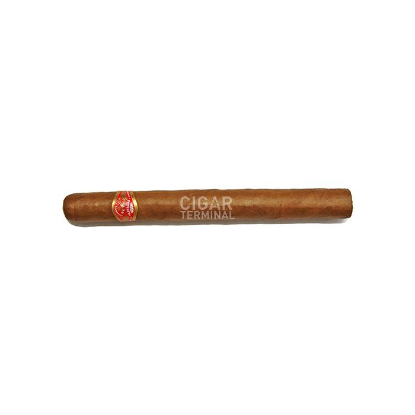
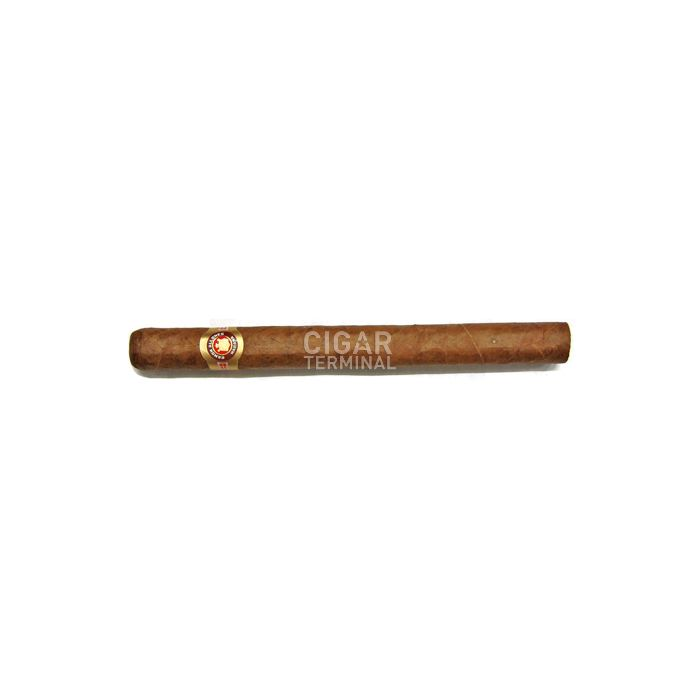
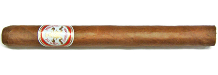
So where did the vanished giants go? Why did they disappear? And across the sea, what was happening? This feature is a record tracing the genealogy of the long cigars — from the age of pre-revolutionary lithographs, through the waves of the deletion lists of the 2010s, their "emigration" into regional editions, the giants of the New World that kept growing fatter across the Atlantic, and on to the man who rolls a 90-metre cigar.
All this feature can trace are the giants that remain in the records. The Partagás Fabulosos (237mm) treated in Chapter 5, for example, is a cigar so thinly recorded that the specialist database Cuban Cigar Website does not itself hold a photograph of it, and it is still listed as "photographs wanted." House rolls that left no record, and the long cigars of brands that died out unnamed, may still be sleeping in a humidor somewhere in the world. Please read on, keeping in mind that there may be giants this magazine does not know.
◆ Chapter 1 — The Measure of a Giant: What Is the Prominentes, 194 × 49?
We begin with the ruler. Cuban cigar sizes have been managed by standard names called factory names (vitolas de galera). The large corona, some 1.4 times the length of the corona (142mm × RG42) that was the standard size of 19th-century Havana, came to be called the "double corona," and as a factory name it was standardised as the Prominentes = 194mm × RG49. RG (ring gauge) is the unit of thickness, measured in 64ths of an inch; RG49 corresponds to a diameter of about 19.4mm.
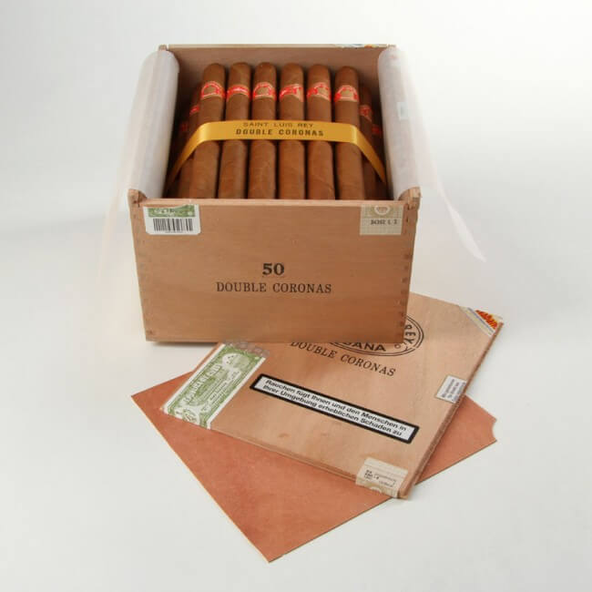
From the late 19th century into the early 20th, "long and slow" was the standard of a gentleman's pleasure in cigars. As a size for spending the two hours after dinner, the large coronas were placed on the signboard of brand after brand. A Prominentes smokes for two to three hours. That length of time, which feels "too long" by today's sensibilities, was itself the mark of standing in those days.
The system of factory names was itself a ladder of lengths. The Churchill class, 178mm × RG47, was the "Julieta No. 2"; 235mm × RG47 was the "Gran Corona (Giant Corona)"; and the figurado tapered at both ends, 233mm × RG55, was the "Diademas." Each of the giants had its own rank. In this feature, ruler in hand, we trace them from the main line at 194mm to the oldest elders of the 235mm class, and on to the slim, long cigars as well.
Not every brand had a giant, however. A fact this research established as "it did not exist" is also material in its own right. Juan López never had a large vitola at any point in the brand's history (the largest in its regular line-up stops at 143mm). The ceiling for Quai d'Orsay and H. Upmann was 178mm. The giant was a format permitted only to a limited number of signboard brands.
◆ Chapter 2 — The Revolution on the Box: The Giants Before the Revolution
The age of the giants began with the pictures on the boxes. Until the mid-19th century, plain wooden boxes were the norm for cigars. One of the pioneers who brought colour-printed lithograph labels to them was Ramón Allones, founded in 1837 (some sources state flatly that it was "the first," others call it "one of the very earliest"; here we record it as one of the pioneers). Crests, landscapes, beautiful women — a box pasted with a lithograph became "an advertisement you could carry," and the concept of the box of 25 is also credited as an innovation of the same brand. Partagás, founded in 1845, was another house that put its energy into box art from early on. A big box needs a big picture. The visual culture of the giants' age and the formats of the long cigars were two sides of the same coin.
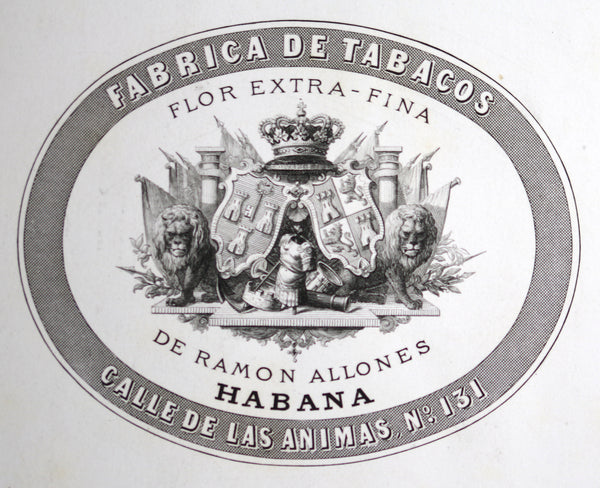
But the Revolution cut this world in two. After the revolution of 1959, on September 15, 1960, the revolutionary government seized and nationalised the cigar factories. The Partagás factory was among them. In the account given by Perelman's "Pocket Cyclopedia of Havana Cigars," most brands disappeared under nationalisation in the 1960s. The great majority of the brands said to have numbered in the hundreds before the revolution died out, and the small brands that held long cigars were sorted out first of all.
Even in the brands that survived, sizes were consolidated and cut. In 1958, the Partagás factory alone is said to have been capable of producing 265 different sizes; the cuts began with the founding of Cubatabaco in 1962, shapes were standardised in 1980, and by 1995 the range had been narrowed to 43 hand-rolled shapes. The Prominentes became a format "left only to the major signboard brands." So came the first wave of extinction.
◆ Chapter 3 — The Vanished Giants:
Headstones of the Prominentes
Here is the core of this feature. We follow, cigar by cigar, the giants born to the Prominentes standard of 194mm × RG49 that then disappeared.
■ It Was Selling, and Still It Vanished —
Saint Luis Rey Double Corona
Saint Luis Rey is a brand founded in 1940 by Britain's Zamora y Guerra. Its name comes from Thornton Wilder's novel "The Bridge of San Luis Rey" (1927). For a long time it was a small brand, sold almost exclusively in the British market. Its Double Corona was, remarkably, a "new giant" first released in 2001. Almost unknown at first, it gradually won a cult following and grew into a cigar that sold out with every release. The early lots carried no band; the band is said to have been added in the mid-2000s.
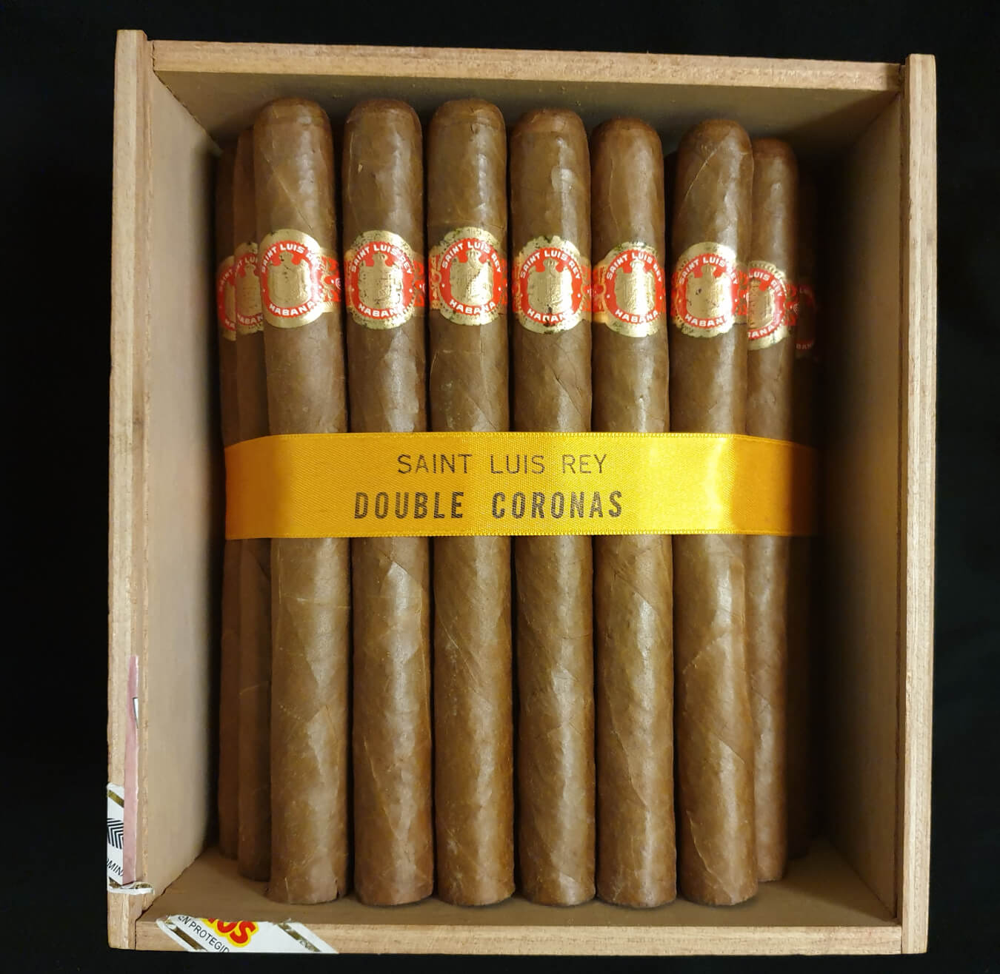
The reviews were excellent. Min Ron Nee, editor of the Cuban cigar encyclopedia, praised its leaf as "the most impressive I can recall in a new cigar," and the critic Ken Gargett scored the 2004 and 2007 vintages at 98 points. And yet, in 2013, this cigar was named explicitly on Habanos' deletion list and disappeared. No official word has ever been given on why a cigar that was selling vanished. The lament of one enthusiast — "there is no point trying to work out the logic of Havana's decisions" — says it all. The brand itself has now shrunk to a single cigar, the Regios (127mm).
■ Another Story, One Letter Different in the Spelling
Here lies a drama of confusion that the research brought to light. In the cigar called "the Saint Luis Rey Prominentes," there were in fact two different things mixed together.
One is the earlier cigar of the brand above, the Saint Luis Rey Prominente (194mm × RG49). It appeared in 1988 and was discontinued in 1998. At first it was a special-order item without even a product name; later, it is said, it was given the vitola name itself, "Prominente." It had no band and came in slide-lid boxes of 50.
The other is the Double Corona (194mm × RG49, factory name Prominentes) of a different brand spelled differently, San Luis Rey. This was a cigar of a sister brand made for the German market in the late 1980s, in response to Saint Luis Rey being exclusive to Britain. It is so rare that Min Ron Nee himself writes that "probably only a single batch was produced, in 1989, and it officially ended in 2000. I have never seen one myself" — and there is no cigar called the "San Luis Rey Prominente."
The Cigar Advisor at Cgars once answered that "the rarest double corona of the post-revolutionary era is the San Luis Rey Double Coronas," but later verification found that this answer itself rested on the confusion between the two cigars. In Min Ron Nee's view, the rarer one is the San-side Double Corona (the single-batch theory of 1989). The same "San Luis Rey," the same 194mm. A difference of a single letter in the spelling swaps even the order of rarity — in the world of these thinly recorded giants, confusions of this kind quietly continue even now. (In the main text, we have set out the facts above with the two kept strictly apart.)
■ Death of a Flagship Bearing a Grower's Name —
Don Alejandro
Vegas Robaina is the brand that bears the name of the legendary grower Alejandro Robaina himself. He was the only grower to have a brand in his own name during his lifetime (founded in 1997). The Robaina family have been growers since 1845. The flagship bearing the name of that family's "patriarch" was the Prominentes Don Alejandro (194mm × RG49, dress boxes of 25).
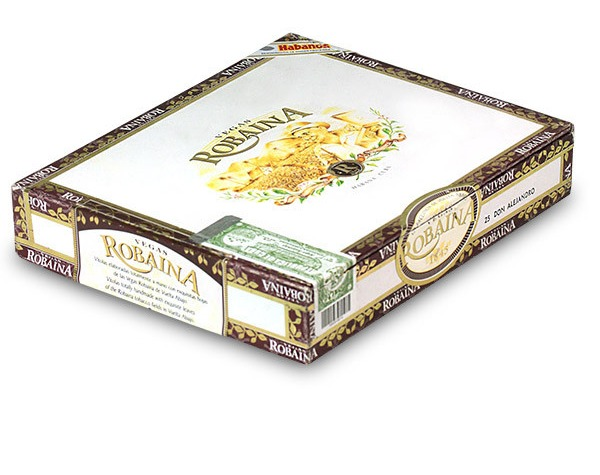
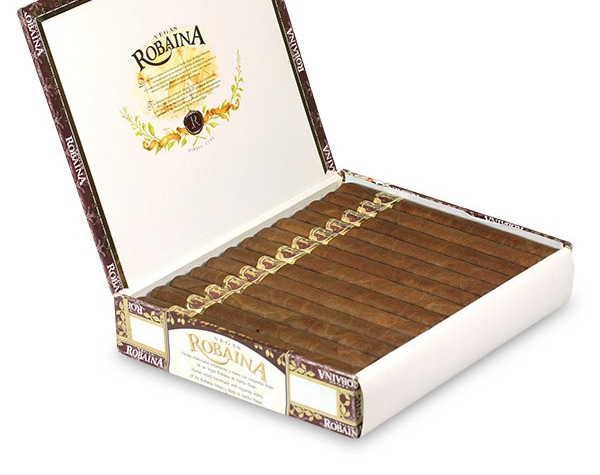
In 2017, the Don Alejandro was placed on the Habanos deletion list and discontinued. The largest cigar bearing the name of the man who grew the finest leaf disappeared together with the brand's decline.
■ The Last Days of a Near-Giant — El Morro
San Cristóbal de la Habana is a new brand born in 1999 for the 480th anniversary of the founding of Havana. Its El Morro (180mm × RG49, factory name Paco) was strictly a "near-giant," 14mm shorter than a Prominentes. Its name comes from the fortress at the entrance to Havana Bay. Discontinued in 2013, it became the symbol of the year in which the cluster of "long cigars with a 49 ring" thinned out all at once.
| Cigar | Size | Years | How It Disappeared |
|---|---|---|---|
| Saint Luis Rey Double Corona | 194×49 | 2001–2013 | Even as it gathered a cult following, it was named explicitly on the deletion list of 2013 and discontinued. No official reason has been given |
| Saint Luis Rey Prominente | 194×49 | 1988–1998 | Appeared as a special-order item. No band; boxes of 50. A different cigar from its successor, the Double Corona (2001) |
| San Luis Rey Double Corona (a different brand) | 194×49 | Single-batch theory, 1989 / officially ended 2000 | A cigar of a sister brand for the German market. Among the rarest of all — editor Min Ron Nee himself writes that he has "never seen one" |
| Vegas Robaina Don Alejandro | 194×49 | –2017 | The flagship bearing the grower's own name. Discontinued on the deletion list of 2017 |
| San Cristóbal El Morro | 180×49 | –2013 | A near-giant. It disappeared in the wave of deletions of 2013 |
That is the state of things in the 194mm main line alone. So what was happening in the even longer world — the territory of 235mm?
◆ Chapter 4 — Another Gigantes, and the World of 235mm
■ Another Gigantes —
Bolívar Coronas Gigantes
There is another giant bearing the name "Gigantes." The Coronas Gigantes of Bolívar (178mm × RG47, factory name Julieta No. 2) is a Churchill-class long cigar that had been made since before the revolution. Among the strongest full-flavoured cigars of Bolívar, with a high aptitude for ageing, it drew unstinting praise from Min Ron Nee: "one I could smoke every day; it has never let me down." Cigar Aficionado's Connoisseur's Corner scored the 1995 vintage at 98 points.
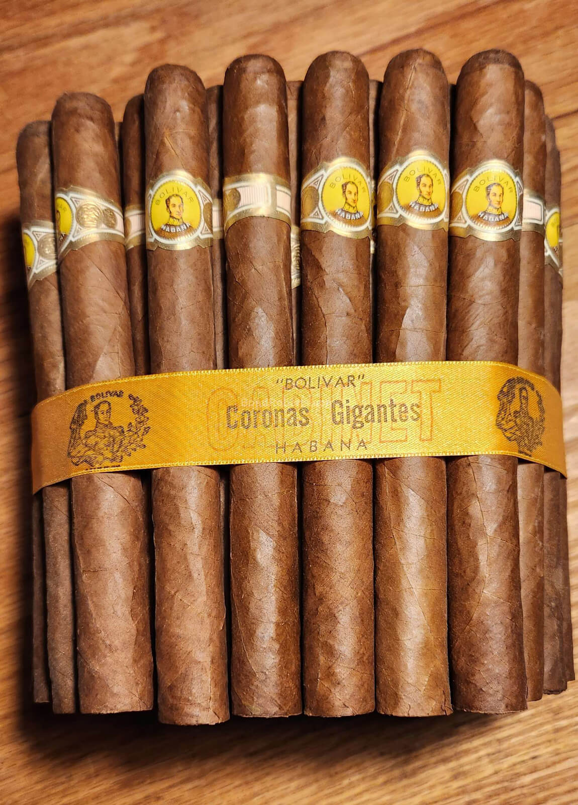
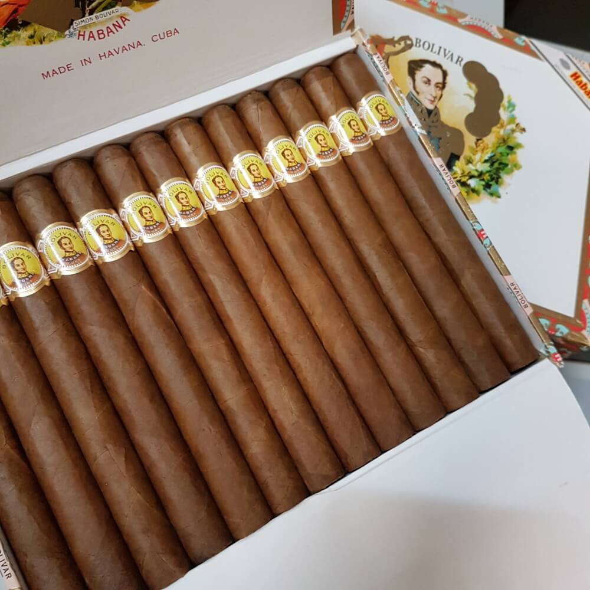
Its death came in stages. The 25s in aluminium tubes ended at the close of the 1980s. The slide-lid box of 50 ended in 2010. The last to remain, the dress box of 25, was discontinued in 2017, and the long curtain call was over. It is now a regular at auctions such as Bond Roberts, and records remain of a box of 25 from 1999 selling for $1,355, a box of 25 from 2016 for $1,305, and a box of 50 from 2008 for $2,505 (the most recent examples as of the end of 2022).
At the same 178mm × RG47, there are two more headstones. The Coronas Gigantes of Sancho Panza (pre-revolution–2006) was the signboard of the popular school — "big, inexpensive and tasty." The Taínos of La Gloria Cubana (–2012) was the largest size of an elegant brand that disappeared once after the revolution and was revived in 1965.
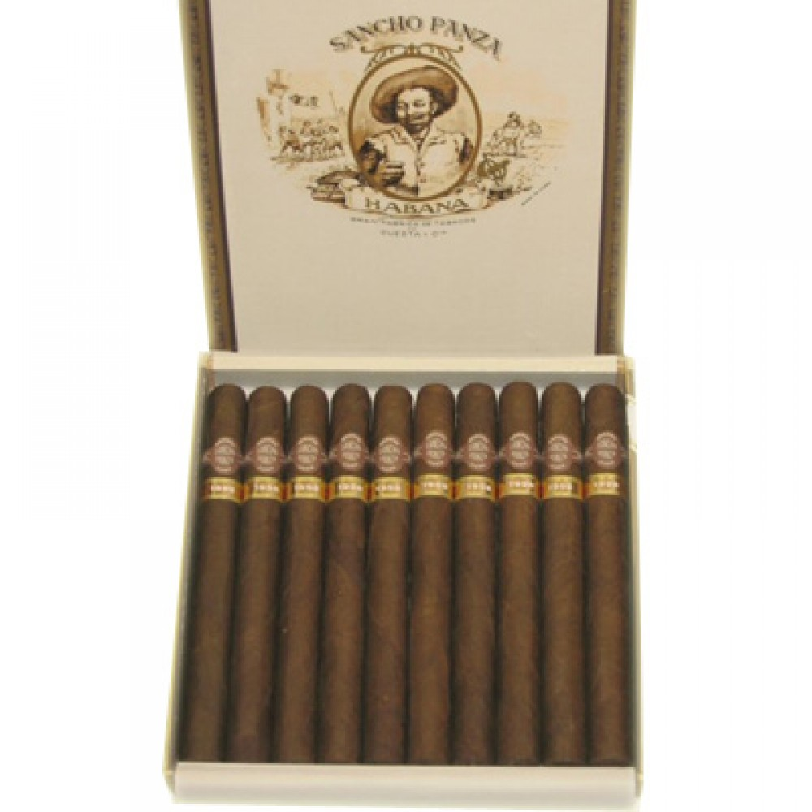
■ The People's Giant — Sancho Panza
Sanchos (235mm)
We move on into the world of 235mm. The Sanchos of Sancho Panza (235mm × RG47, factory name Gran Corona) was among the longest parejos (straight-sided cigars) in the history of regular Habanos production. CigarTerminal calls it the brand's "real Don Quixote." Loved as a "people's giant," with a smoking time of over two hours at an accessible price, its coffret packaging of 5 ended in 2006 and its box of 10 before 2000, and the vitola itself was discontinued in 2006.
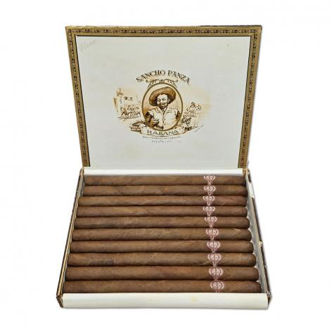
■ A Living Fossil — Montecristo A
At the same 235mm × RG47, there is one that did not disappear. The Montecristo A of Montecristo (factory name Gran Corona) is the longest parejo remaining in the current catalogue. The Editor's sense of it, though, is plain: "It remains in the catalogue, but you rarely see one." Production is extremely intermittent, and it barely appears on the market. Not extinct, but a phantom on the market — in this feature we treat it not as an ordinary "surviving giant" but in the frame of a "living fossil." At the same 235mm, one disappeared in 2006 and one remains as a fossil. That contrast is the entrance to the world of 235mm.
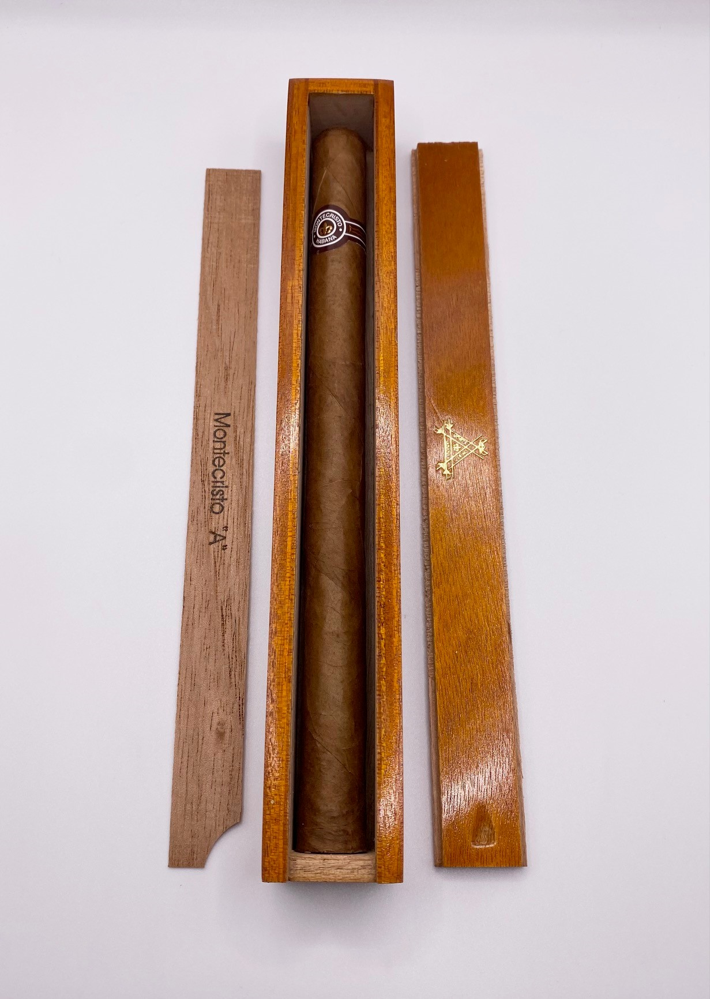
■ The Palacio Diademas: Three Brothers
The core of the 235mm world is the figurado tapered at both ends, the "diadema." What this research was able to verify was an astonishing uniformity of type. The diademas of three brands that stood under the Fernández Palacio house — the Monterrey of Hoyo de Monterrey, the Diademas Extra of Punch (first generation), and the Gran Gener of La Escepción — were, every one of them, the same factory format (55 × 233mm, official weight 21.62g), wrapped in foil, and all discontinued in 1980. They were "three brothers," sharing a single factory format across three brands. The diadema format is thought to have appeared in the 1920s–30s (the house acquired Hoyo in 1931, so the exact year of its creation remains no more than an estimate).
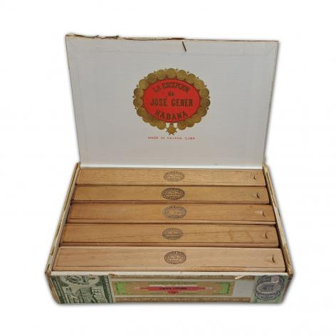
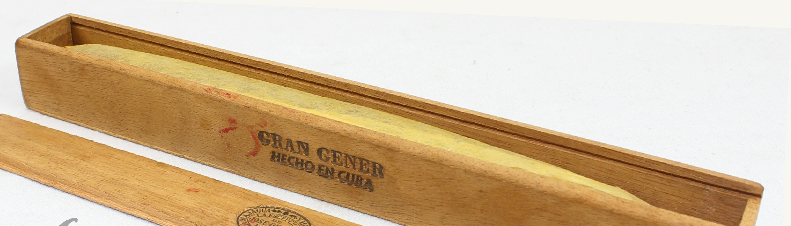
For the Gran Gener, we also record a small loose thread. It is said to have been discontinued in 1980, but the Spanish official gazette's price-revision notice of June 30, 1981 still carries a listed price of "Gran Gener 625 pesetas." Continued sale of stock or a lag in the notice is the likelier explanation, and we do not overturn the year of discontinuation — but we record the discrepancy alongside it. The spelling of the brand name, "Escepción," is incidentally not a misprint: it is the formal trademark, a deliberate misspelling of correct Spanish that the founder kept because, he said, it "sounded better."
In the same size band as the three brothers there were two more, of a different line. The Maravillas of Hoyo (230mm × RG55) was not a diadema but a parejo, nicknamed the "Giant Robusto." It disappeared between before the revolution and around 1960, and was revived in 2015 in a book-style box for Colección Habanos. The Dulcineas of Sancho Panza (232mm × RG47, factory name Manolin) was a giant perfecto tapered at both ends, half of it wrapped in aluminium foil. It disappeared in the 1970s, and a record remains of a part-box of 8 from 1972 selling at Christie's for £1,870 against an estimate of £450–600.
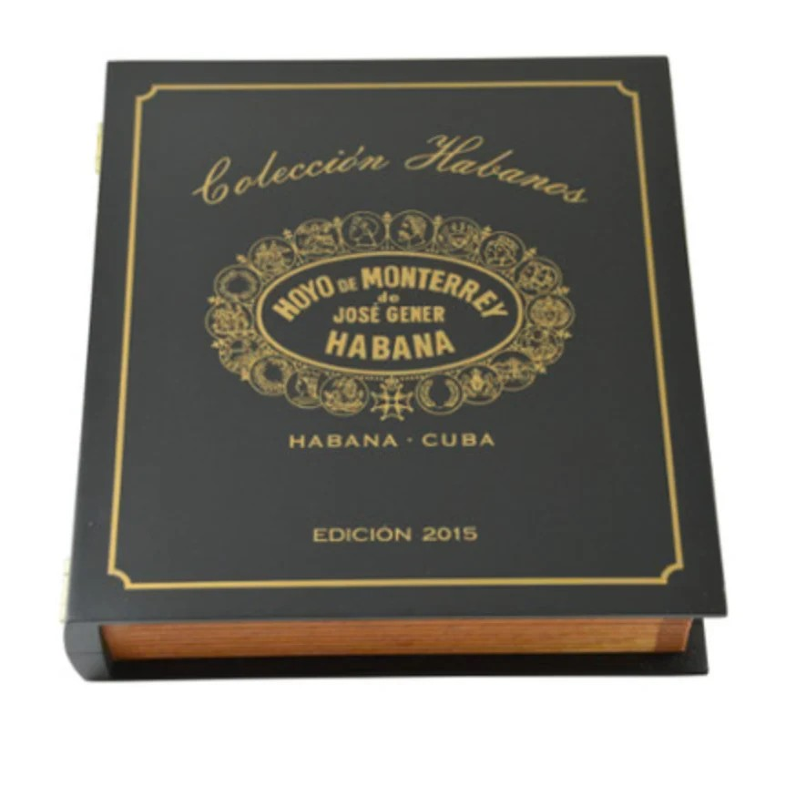
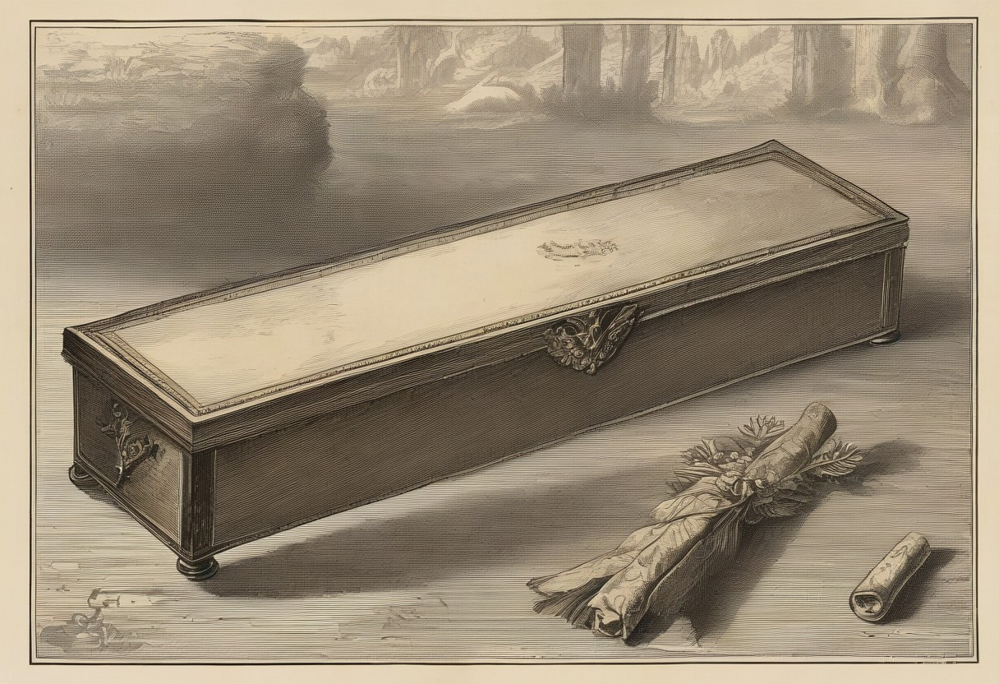
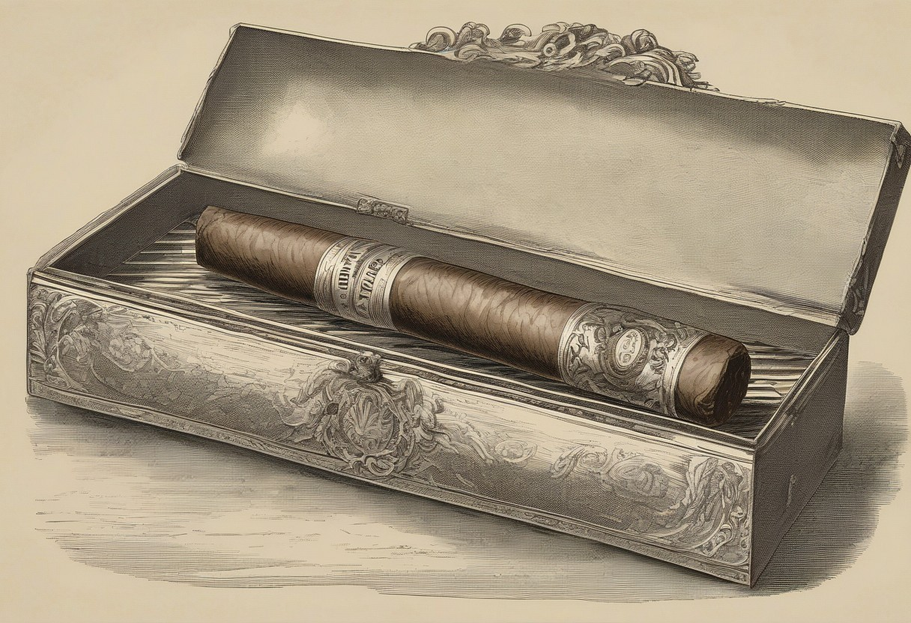
The last of the three brothers was the second generation of Punch. When the first generation of the Diademas Extra (233 × 55) ended in 1980, it was replaced by a second generation (235mm × RG47), slightly longer and slimmer, and that too was discontinued in 1988.
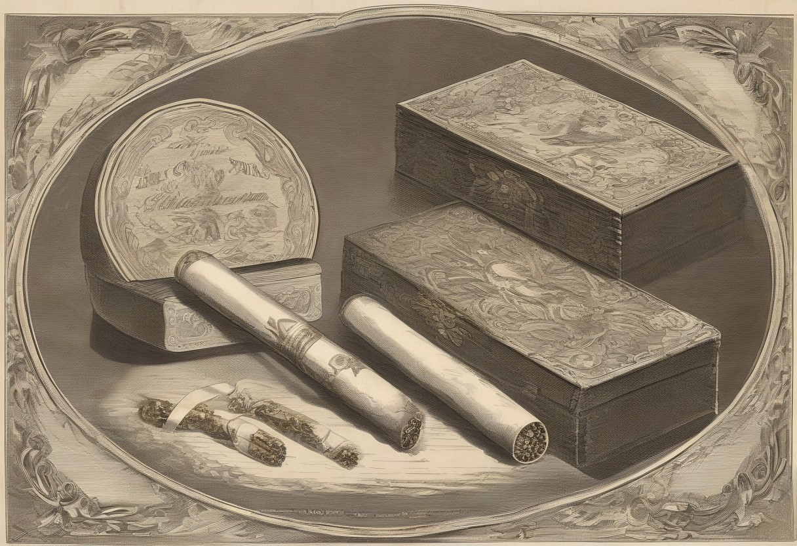
■ The Giant That Rose Just Once —
The Return of the Diademas Extra
And the three brothers have a dramatic after-story. In 2008, the Punch Diademas Extra rose just once, in the form of its first generation (233mm × RG55), as a regional edition (Edición Regional) for Italy. The distributor was Diadema S.p.A.; 1,020 boxes of 10. Trouble procuring the foil pushed the actual release back to late 2009 to early 2010. The largest single cigar in the history of the regional editions, it is the case of "a vanished giant that rose just once," and it builds the bridge to the discussion of the regionales in Chapter 6.
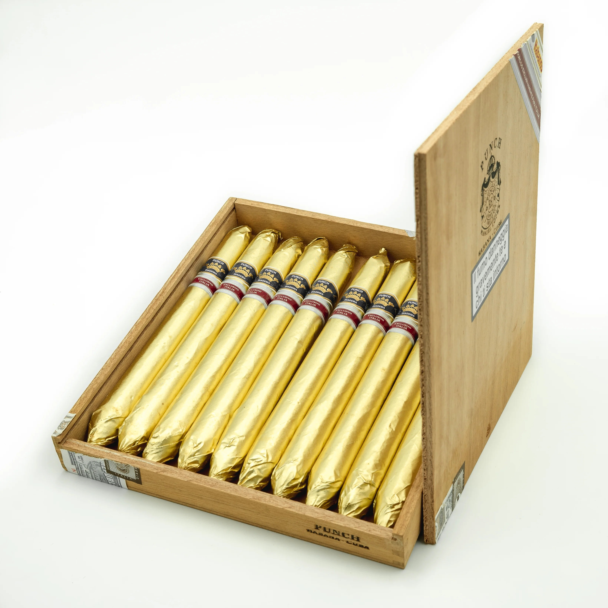
■ New Faces at 235mm —
Particulares,
Havana Club,
and Another Fabulosos
In this extended research, three more headstones were found in the 235mm class.
The Particulares of Hoyo de Monterrey (235mm × RG47, factory name Gran Corona) was a regular-production cigar released in 1980 and discontinued in 1987. What deserves attention is what came after: it was revived in 2000 and 2001 as a limited edition (Edición Limitada). Re-released the following year because of a shortage of supply, it is the only cigar in EL history to have been so treated. Trial batches were even made from late 2002 into 2003.
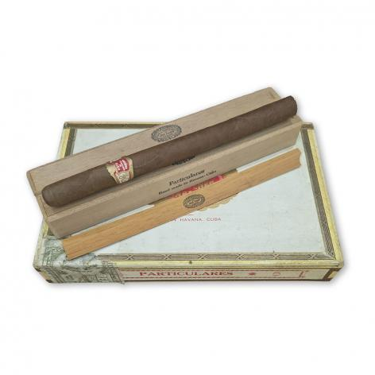
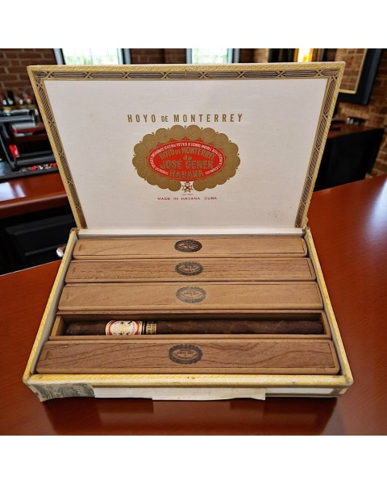
The Havana Club of Dunhill (235mm × RG47) is one of the biggest discoveries of this research. A regular-production cigar that appeared in 1982 and was discontinued in 1991, it was by far the largest of the Cuban-era cigars bearing Dunhill's own name — far beyond the Don Candido line (whose largest class is 165mm). The old framing, that "Dunhill's rarity is not about length," had to be revised because of this one cigar. At auction, estimates in the £200–300 class per cigar line up, and a record remains of a cabinet of 5 in individual small boxes selling for £1,550.
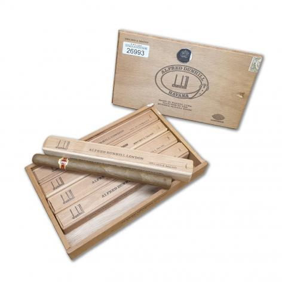
And the Fabulosos of Romeo y Julieta had generations to it. Alongside the first generation (190mm × RG47, discontinued in the 1960s), a second generation (235mm × RG47, c. 1985–c. 1988) really existed. In the early stages of the research we took "the 235mm figure" to be a product of confusion, but the specialist database and Christie's sale records (a part-box of 5; estimate £400–600 → sold for £682) overturned that. It was not confusion, but generations of the same name. We cut it strictly apart from the Partagás version of Chapter 5, as a different thing entirely.
There are commemorative giants, too. The 80 Aniversario of Davidoff (1986, commemorating Zino Davidoff's 80th birthday) is a cigar that multiple sources agree was the longest of the Cuban-made Davidoffs. Its dimensions, however, are in dispute: the official list gives 47 × 235mm, while reports of the actual cigar give 48 × 220mm. The measured side, based on reports of the physical cigar (48 × 220mm), may perhaps be the stronger — but we make no flat assertion, and give both. Cigar Aficionado (2005) called it "the most expensive Cuban-made Davidoff," and reported a box of 20 at auction at about £12,000.
■ The Last of the Diademas —
Cuaba Diadema
The last of Chapter 4 is a giant that came from the Editor's own hands. One of the starting points of this feature was the Editor's hazy memory of the word "Cubana." At first, La Gloria Cubana was the leading candidate, but the decisive evidence was a photograph of the actual cigar submitted by the Editor himself — an extremely long perfecto whose band could be read as "CUABA." Its identity was the Diadema of Cuaba (233mm × RG55). It was a cigar he had actually owned, and smoked.
Cuaba is a brand launched on November 19, 1996, at the Claridge's hotel in London, with the unusual composition that every cigar in the range is a double figurado (manufactured at the Romeo y Julieta factory). Its largest size, the Diadema, was the last bearer of the diadema format, but it was placed on the Habanos deletion list of 2013 and discontinued. It was at first a candidate for the "surviving giants," but once its discontinuation was confirmed, this feature places it in Chapter 4 among the discontinued — because the genealogy of its size and format ties directly into the theme of Chapter 4, and because it is a fine example of "a giant that can only be traced through the physical cigar."
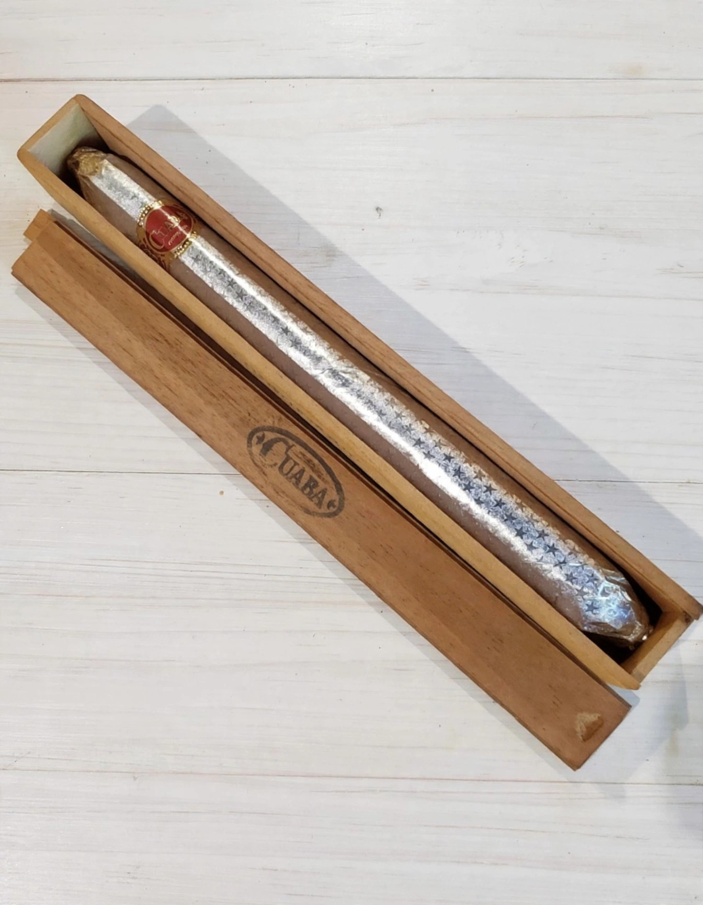
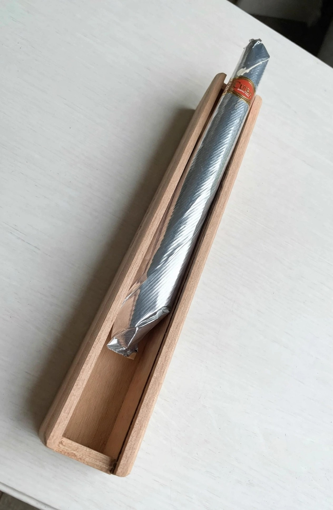
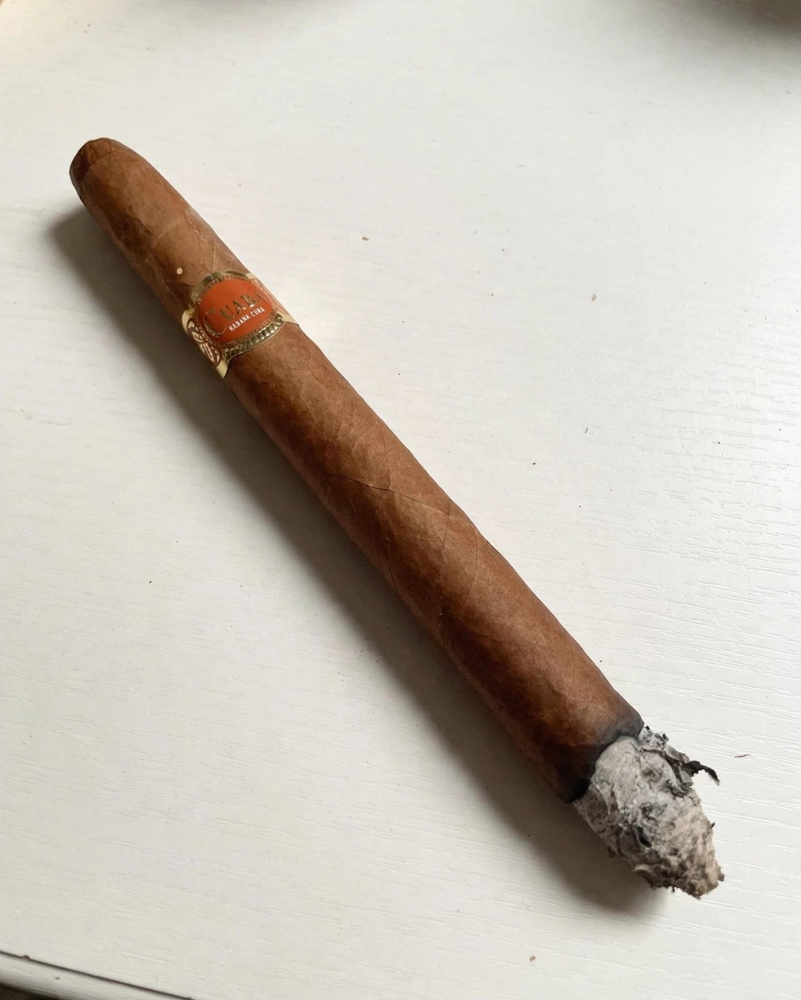
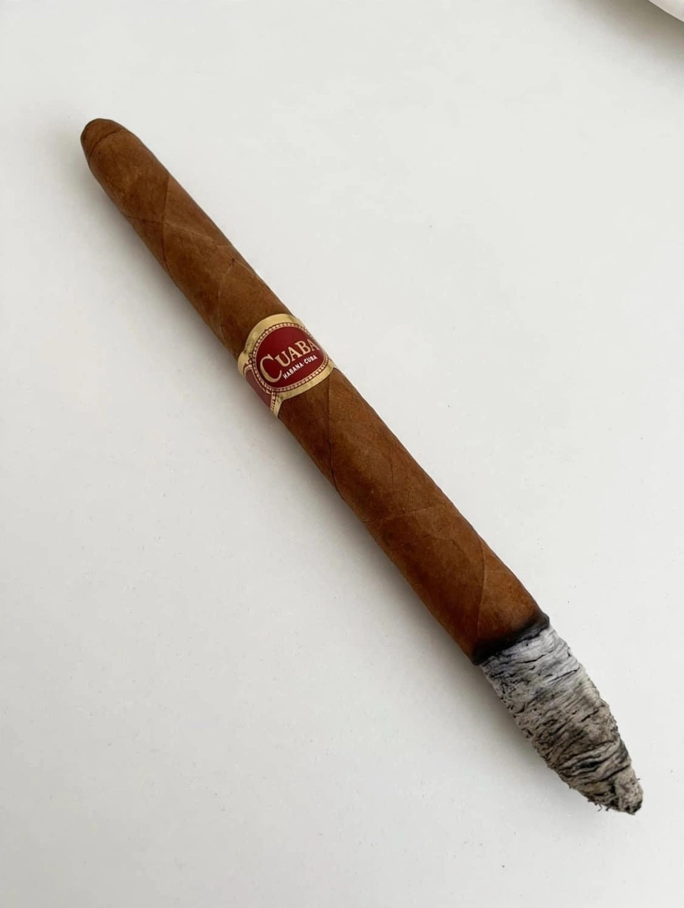
On the current market, a listing for a box of 5 at 350–367.50 Swiss francs (approx. ¥67,600–70,900) remains at EGM, but it is out of stock, and retail distribution has all but dried up. On the day the diadema disappeared from Cuba, the 233mm format itself became extinct. Across the Atlantic, however, there is one who inherited these very dimensions intact (we meet again in Chapter 7).
◆ Chapter 5 — Partagás's Long Ones: Tracing the Editor's Memory
The Editor-in-Chief had one more vague memory. “I'm sure there was an incredibly long Partagás, too.” This chapter checks that memory. We follow the long cigars of Partagás, in order from the shortest.
■ A Long One, Slender in Build —
Serie du Connoisseur No.1
The Serie du Connoisseur No.1 (192mm × RG38, factory name Delicados) is a connoisseur's series that has continued since before the Revolution. It was another of Partagás's long ones, belonging to the genealogy of the giants not by girth but by “length.” Its old-fashioned character showed, too, in the fact that it carried no band until 2006. Together with its two brothers, No.2 (166mm) and No.3 (143mm), it was discontinued in 2010. The year 2010 was the year the slender rings were deleted all at once (we examine this in Chapter 6).
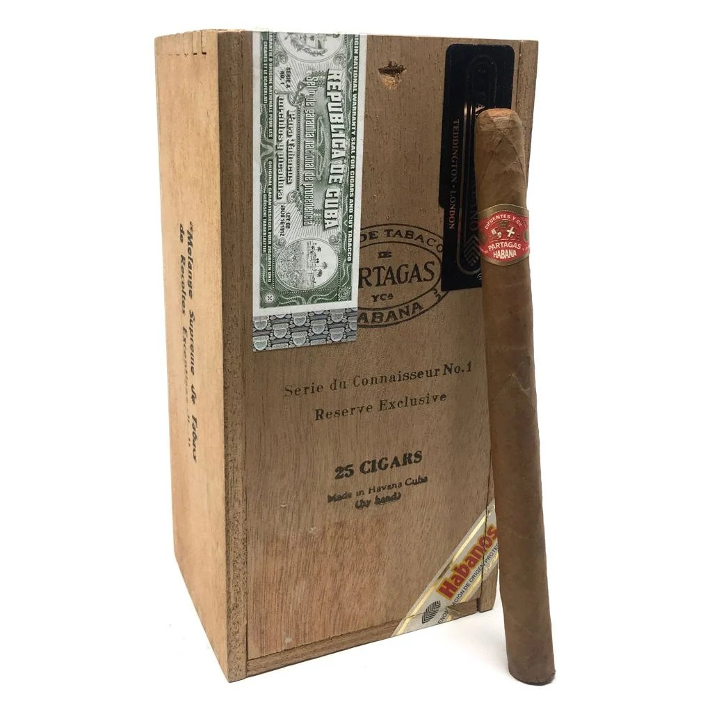
Around it, there is also a family of “slender longs” that belong to the genealogy of the giants by length alone: La Escepción's Coronas Extra Largas (195mm × RG44, pre-Revolution–1970s) and El Rey del Mundo's Grandes de España (192mm × RG38, pre-Revolution–2010). They are not giants in girth, but we record them here in a reference frame, as cigars that cleared the 194mm wall by length alone. Davidoff's No.1 (192mm × RG38) belongs to the same family.
■ A Mass of Presence — Salomones
There was one more candidate for the memory. The Salomones (184mm × RG57) is a current figurado sold exclusively through LCDH; it does not match the Lusitanias in length, but its overwhelming presence would make it no surprise if it had slipped into a memory of “a long Partagás.” This one, however, is a current product. The real quarry lies ahead.
■ The Summit at 237mm —
Partagás Fabulosos
The answer was the Partagás Fabulosos (237mm × RG50). Exceeding the Lusitanias (194mm) by a full 43mm, it is the longest giant Partagás ever made — a giant perfecto, tapered at both ends. It was released before 1960 and discontinued in 1970. Its factory name (vitola de galera) is “Gran Coronas Partagás Largas.”
The identification took its twists and turns. A single line picked out, in the early stages of our research, from the list of factory names in Perelman's encyclopedia — “Partagás Largas 237×50 (production ended)” — turned out to be nothing other than the factory name of this very Fabulosos. The match between product name and factory name confirmed them as one and the same cigar. The decisive evidence was the specialist database Cuban Cigar Website's “Wanted List” (its list of cigars for which photographs are sought). There, the product name and the years of release and discontinuation are stated clearly, while CCW itself holds no photograph of this cigar. Even a specialist database cannot trace the appearance of the actual thing — so rarely confirmed is this giant's survival. House of Grauer calls it “the only cigar that could surpass the Montecristo A,” and the record remains that at Christie's a single cigar sold for £605 against an estimate of £100–200.
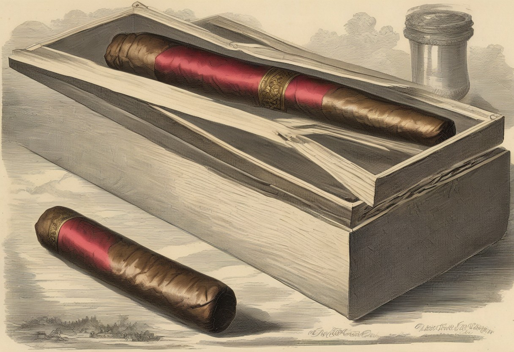
The name “Fabulosos” (“the fabulous one”) has been used, historically, at least five times. ① This chapter's Partagás Fabulosos (237×50, –1970). ② Romeo y Julieta's first generation (190×47, discontinued in the 1960s). ③ The same brand's second generation (235×47, c. 1985–c. 1988). ④ The 2004 Colección Habanos “Fabulosos No.6” (180mm × RG52, a book-style box of 20). LCDH Nyon lists it at 7,900 Swiss francs (approx. ¥1,526,000), but it is out of stock. ⑤ The 2016 Colección Habanos XVI “Fabulosos No.2” (190mm × RG52, 2,000 boxes worldwide). TopCubans lists it at $11,044 (approx. ¥1,746,000) (stock status to be rechecked). As the sales page itself states plainly — a “vitola bearing the historic name ‘Fabulosos’” — this name has been used again and again as a name for calling back the memory of the giants. Even when the length itself is no longer giant-class, the lineage of the name lives on.
The answer to the Editor's memory thus split in two. As a cigar, the “incredibly long Partagás” was the Fabulosos. And the memory of “the man who rolls incredibly long cigars” continues to the figure in Chapter 9.
◆ Chapter 6 — Why Did They Disappear? The Waves of the Deletion Lists, and the Giants' Migration
The many gravestones we have followed so far share a common cause of death. Let us set out the evidence for examination.
First, the market's shift to the thick and short. From 2000 onward, consumer taste moved toward the “thick and short” of the robusto / toro / sublime class, and the slender, long formats fell from the regular catalogues one after another. The critic Ken Gargett has lamented that “90 percent of new releases are so-called fat boys.” Second, smoking time. A Prominentes takes two to three hours, and the 235mm class even longer. Amid smoking restrictions and a faster pace of life, a size that says “give me two hours” became hard to sell (no specific statistics have been confirmed, so we record this as the common view of the specialist press). Third, the disappearance of the packaging. The cabinets of 50, which suited the giants so well, became rapidly a thing of the past with the deletions of 2013. Fourth, a structural point, repeated in the specialist press: to roll a single 194mm cigar takes a long wrapper leaf and great skill, and production efficiency is poor (although no official statement by Habanos on this has been confirmed).
And the decisive blow was the waves of the deletion lists. Habanos periodically deletes unpopular items, but there were three turning points at which the giants fell together. 2010 saw the wholesale deletion of the slender rings (the three Serie du Connoisseur brothers, among others). 2013 took the Saint Luis Rey Double Coronas, the Cuaba Diadema, and the 50-cigar cabinet packaging of each brand. 2017 took the Don Alejandro, the final packaging of the Bolívar Coronas Gigantes, and the 50-cigar cabinet of the Punch Double Coronas. It is no coincidence that so many of this feature's gravestones are concentrated in these three years.
The logic of the defence: Rationalising the SKU count (the number of lines) is only natural for a manufacturer, and cutting long cigars that do not sell is a reasonable business decision. If leaf and torcedor hours are redirected to the thick-and-short bestsellers, overall supply stabilises. And it is no doubt also true that demand for the giants themselves had thinned worldwide.
The logic of the critics: There are cases such as the Saint Luis Rey Double Coronas that “disappeared even though they were selling,” and the reasons for deletion are never officially explained. Auction prices for the discontinued giants continue to hold or rise, and the shift from “giants to smoke” to “giants to admire” is advancing. It has also been pointed out that cutting a brand's “face” thins out the long-term story in exchange for short-term efficiency.
Our editorial view: Whether the decision was right depends on where one stands. One thing, though, can be said: what disappeared was not “the longing for giants.” That longing survived, in the form we describe next.
■ The Giants That Migrated —
Edición Regional,
the Life-Support System
The giants had not become extinct. They had migrated. The Edición Regional system (ER = regional limited editions), begun in 2005, is a mechanism by which a regional distributor can specially order a size that is not in that brand's current line-up (a minimum production of 25,000 cigars, exclusive sale in the target region for two years after release, and, from 2012, limited to one cigar per distributor per year). Inside this system, the long ones made their home.
Symbolic of this is the “109” format (184mm × RG50). This is a mould that was originally the prototype for the Lusitanias / Gigantes, and it was adopted for eight cigars as the ER's “standard giant.” Germany's Bolívar 5ta Avenida (2009) is an unusual work in which brand and format were decided by an enthusiast vote (more than 1,100 votes) and made to a 1950s blend specification. The giants' mould did not die; it became the standard specification of the regional editions. The largest ER in history is the Punch Diademas Extra ER for Italy (233×55) that we saw in Chapter 4. On the other hand, the mainstream of today's ERs leans toward the short and thick (there are even examples of 200,000 cigars at 140mm × RG52), and the ERs of long cigars are concentrated in the early period (2006–2018). A recent exception is a slender long — the Lancero Adriático (192×40, released 2025), which became the first lancero for Juan López. The reversal has happened, too, in which a long cigar was born as a regional edition for a brand that was never supposed to have had a giant.
| Cigar | Size | Region | Year (vintage / release) | Production, etc. |
|---|---|---|---|---|
| Punch Diademas Extra ★ Largest ER | 233×55 | Italy | 2008 / late 2009–early 2010 | 1,020 boxes × 10 cigars. Detailed in Chapter 4 |
| Por Larrañaga 35 Aniversario | 194×49 | Germany | 2026 / 2026 | Boxes of 50, total production 100,000 cigars. €35 per cigar |
| Sancho Panza Quijote | 194×49 | Spain | 2010 / 2011 | Numbered 2,500 boxes × 10 cigars |
| Punch Platino | 194×49 | India | 2009 | 1,600 boxes × 25 cigars. The only ER for India in history |
| Bolívar Doble Coronas | 194×49 | Middle East | 2007 | One of only two cigars in history to wear the “Medio Oriente” band. Production figure from a single source only |
| Bolívar Especiales No.2 | 192×38 | Germany | 2009 | 2,400 boxes × 25 cigars. A slender long |
| El Rey del Mundo La Reina | 192×38 | United Kingdom | 2018 | Production figure unconfirmed. A slender long |
| Juan López Lancero Adriático | 192×40 | Adriatico | 2023 / 2025 | 6,000 boxes × 10 cigars. The brand's first lancero |
| Saint Luis Rey Adamastor | 192×40 | Portugal | 2025 | The same vitola as the Lancero Adriático. Production figure unconfirmed |
| Edmundo Dantes Conde 109 | 184×50 | Mexico | 2007 (+ second shipment 2008) | 600 + 600 boxes × 25 cigars |
| Bolívar 5ta Avenida | 184×50 | Germany | 2009 (re-released 2012) | 3,000 boxes × 20 cigars. Planned by enthusiast vote |
| Diplomáticos Bushido | 184×50 | Asia Pacifico | 2014 / 2015 | 2,000 boxes × 25 cigars. The 400th anniversary of Hasekura Tsunenaga = the Japan connection (Chapter 10) |
| Sancho Panza Eslabo | 184×50 | Serbia | 2014 / 2015 | 1,000 cabinets of 50 cigars |
| Punch Clásicos | 184×50 | Switzerland | 2011 | 4,000 boxes × 10 cigars |
| El Rey del Mundo Kon Tiki 1973 | 184×50 | Los Andes | 2017 / 2019 | 1,200 cabinets of 50 cigars. Currently listed (Chapter 10) |
| La Gloria Cubana Orgullosos | 184×50 | Switzerland | 2018 | 6,000 boxes × 10 cigars |
| Quai d'Orsay Sélection Royale | 184×50 | Switzerland | 2020 / 2023 | 1,600 boxes of 50 cigars. Switzerland's third 109 |
| Bolívar Armonía | 184×57 | China | 2008 | 2,008 boxes × 8 cigars. A box at 8,888 yuan — “8” throughout. Largest-ring class of ER (Salomón) |
| Bolívar Tesoro | 184×57 | Germany | 2016 / 2017 | 6,000 boxes × 10 cigars. No ER of RG58 or above exists |
| Ramón Allones Grandes | 180×49 | Spain | 2008 | 12,000 boxes × 10 cigars = the largest production in this table. A 184mm notation also coexists |
| Punch Sir David | 180×49 | Hong Kong | 2018 | 1,200 cabinets of 50 cigars. A memorial cigar for Sir David Tang |
| Ramón Allones Super Ramón | 180×54 | Canada | 2011 | Numbered 1,000 boxes × 25 cigars |
| Bolívar Poderosos | 180×54 | Belux | 2013 | 2,000 boxes × 25 cigars + 100 jars |
| La Gloria Cubana Gloriosos | 180×54 | Germany | 2015 / 2016 | Production figure unconfirmed |
| Ramón Allones Estupendos | 178×47 | Asia Pacifico | 2006 (+ re-release 2007) | The first ER for Asia Pacifico. The total given (72,300 cigars) does not agree with the calculation from box counts; unresolved |
| El Rey del Mundo Taínos | 178×47 | Taiwan | 2018 | 8,888 boxes × 10 cigars. A revival, under the same name and size, of the discontinued regular Taínos |
| Diplomáticos Legendario | 178×47 | Italy | 2023 / 2025 | Numbered 10,000 boxes × 10 cigars |
For reference, there are also 12 thick cigars of 160–177mm and RG52 or above (Capitolio, Libertadores, Eminentes, and others). And Cuaba's only ER is the Cuaba APAC (2020 vintage / released 2021, a 156×52 perfecto, 8,888 boxes × 10 cigars), which we record here as the connection to the Cuaba section of Chapter 4.
The Giant That Existed Only on a List —
Cifuentes
Super Estupendos
Cifuentes's Super Estupendos is a cigar apart. Its existence has never been confirmed, and the record is ambiguous. Its nominal specification (235mm × RG47, factory name Gran Corona) is correct, but it is treated as a 1975 “proposed” cigar: Cuban Cigar Website states clearly that “actual production has never been confirmed,” and Min Ron Nee surmised that it was “one of the cigars that existed only on paper.” On the other hand, several actual examples can be confirmed: Halfwheel bought a single cigar on the secondary market for $85 and left a smoking review of it (about four hours, 84 points), and its measured length was not the nominal 235mm but about 229mm (9 inches).
The same Cifuentes's Artesas Reales is officially a Salomones shape of 184mm × RG57, positioned as the only example of this shape made in regular post-Revolution production. Its measurements, however, disagree: the actual cigars in the box in Min Ron Nee's collection measure 174–179mm, while the example listed in the official 1975 catalogue measures 181mm. Giving both figures, the measured side, based on weighing and measuring the actual cigars in the collection, may well be the likelier one? (The catalogue example's 181mm sits midway between the two.) Actual production is thought to have ended in 1975.
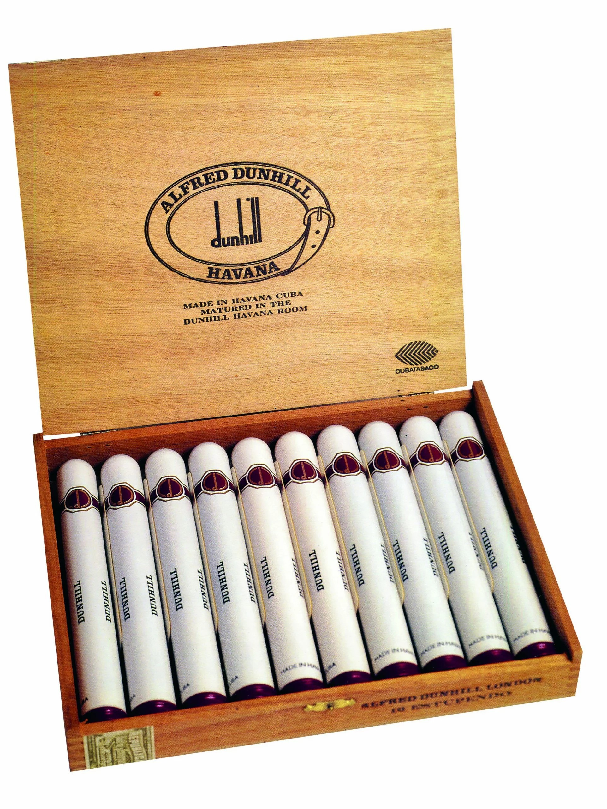
The disappearance of the foreign-owned brands is also an undercurrent of this chapter. Dunhill's Cuban production ended in 1991, and Davidoff, too, completed its withdrawal in 1991, following its 1989 announcement. Chapter 4's Havana Club and 80 Aniversario were the last giants of that foreign-owned era.
◆ Chapter 7 — The Giants That Crossed the Atlantic —
Cuba Vanished, America Grew Fat,
Manila Survived Slender
A Detour: Manila —
Another Spain
Before the Atlantic story, a detour to the Pacific. Cuban tobacco seed crossed to the Philippines in 1592 aboard the Manila galleons. Manila cigars grew up under the monopoly system (the Estanco) that began in 1782, and in the 19th century they were exported to Europe and Asia as Havana's rival — so much so that in 1886 Kipling sang of the Manila cigar in his poem “The Betrothed.” In 1881, Tabacalera (Compañía General de Tabacos de Filipinas) was founded in Barcelona, and in 1885 “La Flor de la Isabela,” then one of the largest flagship factories in the world, was born in Manila. The head office burned down in the Battle of Manila in 1945, and the cigar business passed into Filipino ownership in the 1990s; production continues today in Cavite Province.
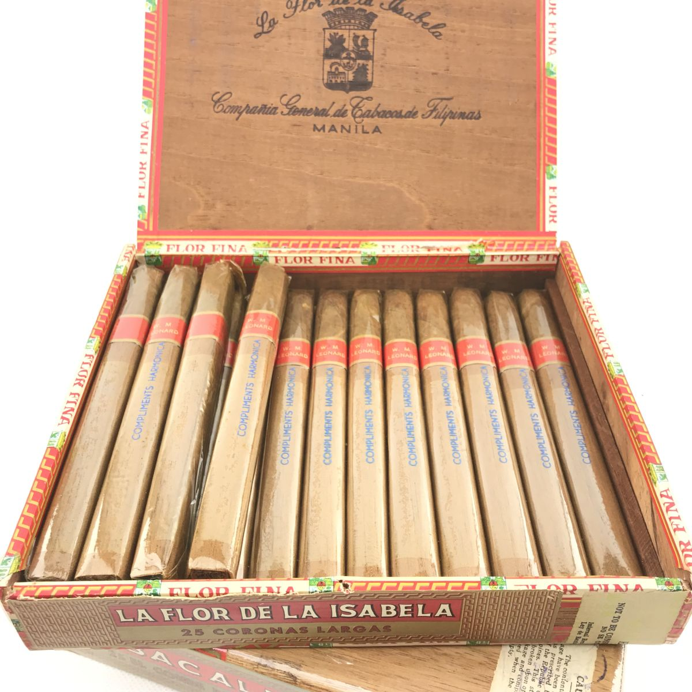
Manila's long ones are not in the extinct group. Tabacalera's flagship-line Double Coronas remains current in the Philippine Bureau of Internal Revenue's official 2026 register, and its actual dimensions are 215mm × RG50 — a current long cigar exceeding the Cuban double corona standard (194mm) by about 21mm. Stock distributed by Japan's authorised importer, Tsuge Seisakusho, is currently listed on Rakuten Ichiba as “50RG / 215mm,” and at the domestic retailer Sekai no Tabako Tsuhan it is sold at ¥930 per cigar (confirmed November 10, 2026). The side that survived slender — without ever trumpeting itself as a giant, yet without becoming extinct either. That is Manila.
Manila, though, also has a phantom layer. One is a 19th-century specimen. In the 1830s, Baron von Hügel, travelling around the world, witnessed in the streets of Manila enormous cigars that made the old women smoking them look as if they were “holding short branches in their mouths.” “Even with the fire already lit, they were over 1 foot long (about 30cm) and 1 inch in diameter (about RG64),” he records (the figures are eyewitness testimony, not measurements of the specimen). The specimen presented to him by the factory manager was accessioned in 1839 by the Weltmuseum Wien (accession numbers VO 2759 / VO 2760), where it survives in storage today. The other is the 20th-century GIGANTES. A single cigar of about 356mm, in a coffin-style case stamped “GIGANTES — Tabacalera,” survives on the market as a discontinued presentation piece (about 356mm by market measurement. This disagrees with a database registration of “18 inches × 37,” and the side with an actual measurement, about 356mm, may well be the likelier one?). Where Cuba's giants vanished by official list, Manila's giants remained in the form of specimens and souvenirs.
■ The “Length” the Exile Generation Carried
Now, the Atlantic. While Cuba's giants were disappearing by deletion list, the opposite movement was under way on the far shore. First, the inheritance of “length.” The perfecto shapes of Arturo Fuente's Hemingway series are a classic form that was in fashion in Cuba from the 1920s to the 1950s. Carlos Fuente Sr. found the moulds from his father's era, left behind in the old factory in Ybor City (Tampa), and revived them around 1980. The Hemingway Masterpiece, added about five years later, is 9 inches × RG52. Cameroon leaf is scarce, and Carlos Jr. says they are “lucky to make 10,000 in a good year.” It is an example of length and shape carried into exile as a family treasure.
And Fuente has the Opus X Perfecxion A (235mm × RG47), the same dimensions as Cuba's Gran Corona. Neptune Cigar's product classification for it is, quite simply, “Giant.” Cigar Aficionado gave it 94 points. At a list price of $31.25, however, the same shop's single-cigar price is $66.15 (approx. ¥10,450), and it is out of stock. The pattern of “you cannot buy it” exists on the continent, too.
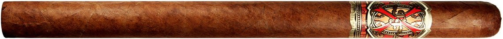
Tatuaje's RC233 is a special cigar as this feature's point of connection. A 233mm × RG55 Diademas — it matches Chapter 4's Cuaba Diadema even in dimensions. “RC” stands for Retro Cuban, and everything about it is made of “references to Cuba”: the old Cuban-style foil-wrapped figurado, the tricolour band, and even a naming that proclaims its length in millimetres. The blend is by Don Pepín García and Pete Johnson. The same 233mm now stands on both shores of the Atlantic. Its younger brother, the RC184 (184mm × RG57, a Salomón), is also current.
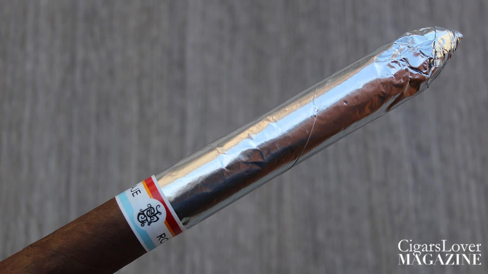
Plasencia is a house that has passed through revolution twice. It crossed to Cuba in 1865, had its farms confiscated in 1963, fled again in 1979 in the Sandinista revolution, and returned to Nicaragua in 1990. “In 150 years, we have never missed a single harvest” is the house's pride. That house's current flagship, the Alma Fuerte Generación V, is a box-pressed Salomón (178mm × RG58) — a choice to keep the traditional Diademas / Salomón forms on its signboard. There are also houses that chose “not to grow fat.” Davidoff's head of tobacco says “the upper limit of what feels comfortable is RG54,” and its core lines hold to RG54 and below. The swelling was not inevitable; it was a choice.
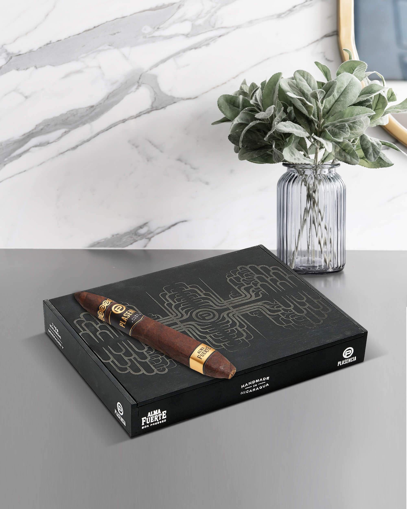
■ The Swelling of “Girth” That the Market Produced
The other movement was girth. Its starting point was the Reyes family's group of large sizes. Cuba Aliados' “The General” came first in the genealogy of sizes, and, under a changed name and brand, Puros Indios' The Chief (18 inches × RG66, 457mm) appeared from the end of 1995 onward (the specific years “1987” and “1994” have no corroboration and are not adopted here). It was a commercial product actually sold at retail in the 2000s, with smoking reviews surviving, but because of its insistence on rolling with only two wrapper leaves, large leaves could not always be assembled, and it was not made frequently — in reality, an “intermittent, small-lot production under a raised signboard.” Reyes Sr. died in 2012, and Oliva acquired the trademark in 2021. We judge it today to be a past product (discontinued). Reyes's position as the starting point of the big-ring era is supported by Christian Eiroa's testimony (“the big-ring era began with him”).
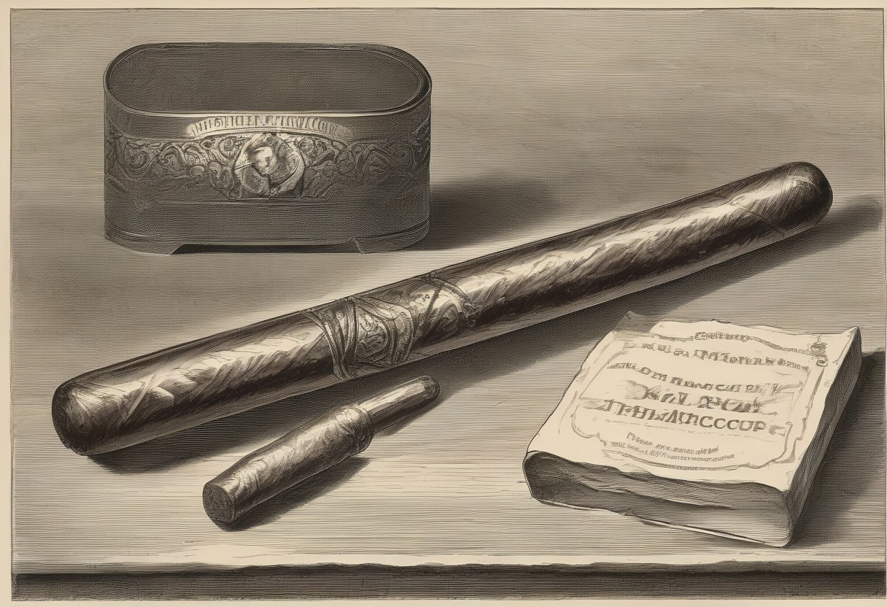
The turning point was Pérez-Carrillo. With the 1997/98 La Gloria Cubana Serie R he took the big ring nationwide, and in 2000 he proposed RG60. Cigar Aficionado calls him “the godfather of the big ring.” In December 2012, the same magazine's creation of a “Grandes” division in its rankings was the institutional milestone at which the 6×60 became “an established rank.” After that came acceleration: the E.P. Carrillo INCH No.70 (7×70), the Asylum 880 (8×80), and the JFR Lunatic's “The Size That Shall Not Be Named” (10 inches × RG100, 2023). The Asylum April Fools' 9×90 (229mm × RG90) began as an April Fools' joke on social media in 2021, which retailers ordered in earnest and turned into a product. It was the most direct example of all of social-media appeal giving birth to a giant.
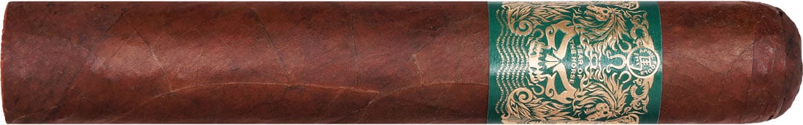
The swelling's end point is Asylum's Megalophobia (13 inches × RG134, about 53.2mm in diameter). Unveiled at PCA 2025 at $125 per cigar (approx. ¥19,800), smoking reviews of it exist. Its weight, against the maker's published 8.3 ounces (approx. 235g), measured 7.0 ounces (approx. 198g) on a purchased example. Since a record exists of the actual thing being bought and weighed, the measured side may well be the likelier one? It began as a riposte to Aganorsa's Lunatic 10×100, and its catchphrase is “Enough is Enough.” Ironically, that “enough” produced the largest cigar of all. Aganorsa, incidentally, is a company that gathered the former Cubatabaco agronomist team and set itself the goal of “reproducing the Cuban profile.” “Reproducing the taste of Cuba” and “a girth that never existed in Cuba” live together, without contradiction, under the same roof.
There are veteran giants, too. Oscar Valladares's The Woody was unveiled in 2015 as an event-only 21×100, and the current sales version has changed specification to 21×80 (because the dimensions at unveiling and today differ, we give both). Its younger brother, the Big Johnny, is 8×66. Perdomo's Inmenso is a pioneering RG70 line whose trademark was first used in 1998, and its revival, the Inmenso Seventy, is currently on sale. RoMa Craft's CroMagnon Fémur (10 inches × RG133⅓) was a 2013 showpiece, of which only about 200 were made (the theory of “a limited run of about 30,000” is an error). And as a counterweight to the commonplace that “thick means low quality,” we add the fact that the CAO Flathead V660 (6×60) shone with 95 points in CA and third place in 2015. To be honest, though, in the New World, too, the tradition of “length” itself is thinning. In the 235mm class, only Fuente's A family and the RC233 remain, and the main battlefield has moved to girth. The very definition of a giant has moved from length to girth.
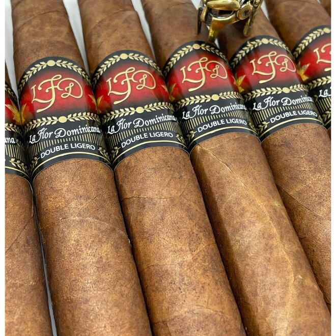
■ Three Kinds of Record Class —
The Giant That Sold, the Giant That Sleeps, the Giant That Was Joined
In the exhibition and record class, a difference in the “quality” of the record becomes visible. Gran Habano #5's El Gigante is an exhibition giant 19 feet long (about 5.8m), using 1,600 pounds of tobacco leaf (about 25,000 ordinary cigars' worth); against an asking price of $200,000, it was actually sold to an anonymous collector for $185,000 in January 2013. America's largest was “a product on which a sale was concluded.”
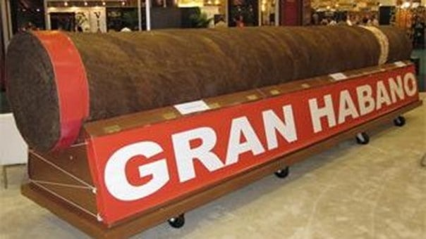
In Belgium's Sint-Niklaas Pipe and Tobacco Museum, a single enormous cigar — 6.34m long × 47cm in diameter, 400kg in weight, made of 9,300 tobacco leaves — sleeps in a glass case in the entrance hall (some tourism materials give 6.43m, and we give both figures, but the 6.34m side, adopted by multiple sources, may well be the likelier one?). It is an exhibit made by a local guild in 1993. And in March 2026, in Ybor City, Tampa, the fourth-generation Cuban torcedor Odelma Matos joined together sections rolled in units of about 40 feet and unveiled “La Faraona,” measured at 469 feet (about 143m) × RG120. This, however, is not a Guinness certification. Guinness has a policy of not certifying tobacco-related records, and the application was not accepted. A single solid body / a joined type / a product on which a sale was concluded — the very quality of the record reflects the nature of each country and market.
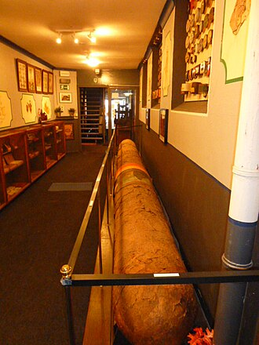
■ Verification: The Giant Without a Photograph —
The Emperador Affair
Finally, one example of verification in practice. There was a case concerning a Philippine giant cigar, “The Emperador.” It is a single cigar listed by the Australian retailer Firmin Cigars as “The Emperador - Philippines (Vintage 1999) / 18 inches / 70-90 RG / AU$350.” That shop, however, has published not a single photograph of the actual cigar. Its current main image is an AI-generated picture, and the page's own alt text states plainly that it is “an image created with AI in the style of Van Gogh.” Moreover, in the Wayback records, this product's vintage notation was rewritten from “Vintage 1996” at its first appearance (2018) to “Vintage 1999” in 2025.
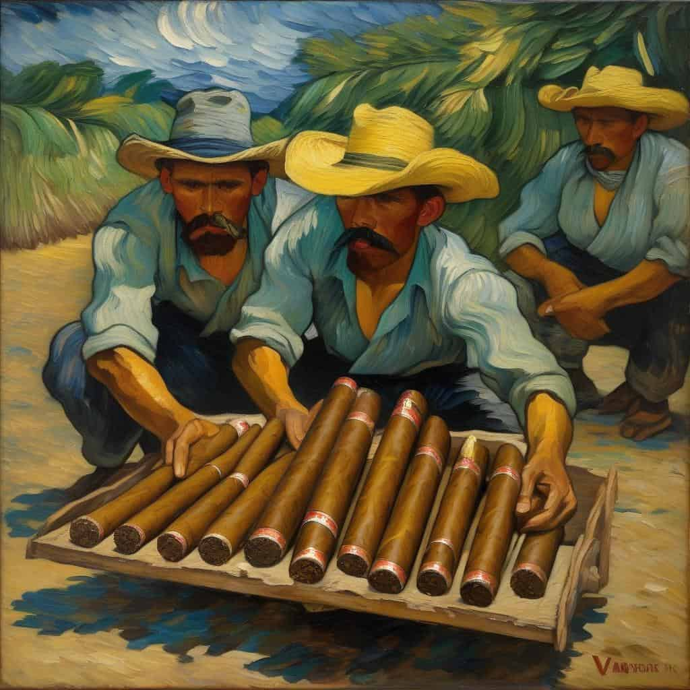
The photograph of “the Emperador box + two cigars” that circulated in the world also had its true identity exposed by a discovery of the Editor-in-Chief himself. What it showed was a product photograph of Barbados's Platinum Coast Cigars, and on the lid were Arturo Fuente's crest and the words “ARTURO FUENTE” — in other words, a box of 30 of Fuente's regular Emperador (7×52). It has nothing to do with the Philippine giant cigar. Text and photograph had been wrongly joined together, and a non-existent “product photograph” had taken on a life of its own.
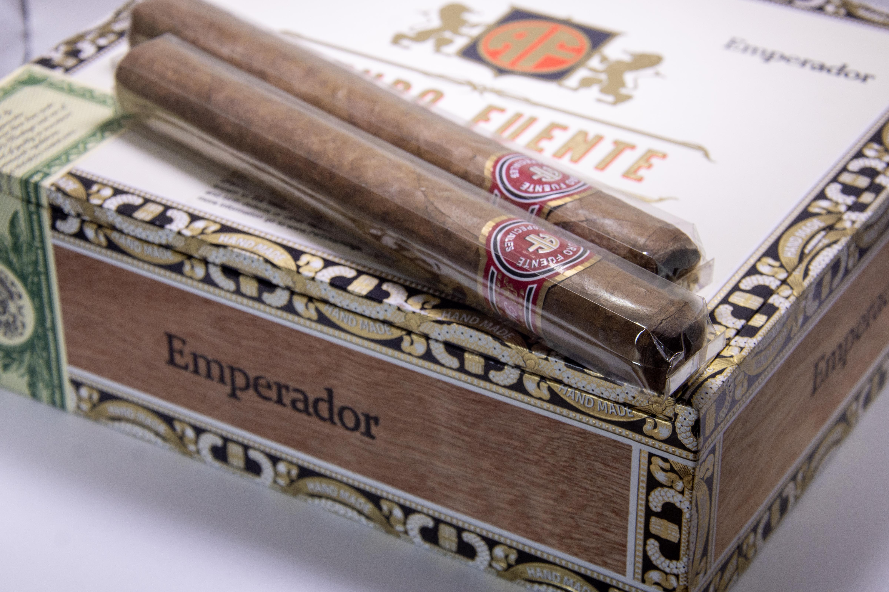
Is there, then, no core of actual existence? There is. In the sales archive WorthPoint, an independent actual-sale record survives: “GIANT EMPERADOR CIGAR WITH CEDAR BOX FR. PHILIPPINES.” The description reads “a giant cigar of over 1 foot, sold in the Philippines,” and in the photograph a single pointed-tip figurado rests in a cedar box, looking a little over twice the length of the $1 bill (15.6cm) shown for comparison. In impression, that is about the 35cm class; it does not look like 18 inches (45.7cm). In this feature, we take this WorthPoint actual-sale record as the account in the main text, and we leave Firmin's claim of “18 inches × 70/90 RG, Vintage 1999” in the notes, as an account supported only by the retailer's own text, without corroboration. It is a separate matter from Tabacalera's GIGANTES (about 356mm), and no material connects the two. There is a hypothesis that the “70/90” notation may be the girth range of a head-heavy figurado, but we leave it noted alongside, as undecidable. The giant without a photograph was thus broken down into “a core of existence (an actual-sale record)” and “exaggerated dimensions (sales copy).”
◆ Chapter 8 — The Giants That Survived —
Why Did Only These Four Remain?
At the end of the stories of extinction and migration, only four cigars remained as regular-production Prominentes. It is the three current cigars touched on in the introduction, plus one more.
The Partagás Lusitanias (194mm × RG49) is the flagship-class double corona of Partagás, founded in 1845. CigarTerminal places it “among the finest double coronas,” and Ken Gargett called it “my favourite regular-production double corona.” In 2013, a rare edition was also born, the Lusitanias Gran Reserva Cosecha 2007 (in boxes of 15).
The current form of the Ramón Allones Gigantes (194mm × RG49, dress boxes of 25 only) was in fact born in 1978. It appeared as the “109” size in the 1972 size rationalisation with Partagás, and in 1978, in Cubatabaco's rationalisation, it changed shape into the standard Prominentes. A master brand that in 1927 boasted more than 60 vitolas had shrunk by the beginning of the 21st century to just three regular cigars, and the Gigantes is one of its last survivors. Some enthusiast magazines describe it as “discontinued once, but brought back” (we record this as a mention at the level of expression).
The Hoyo de Monterrey Double Coronas (194mm × RG49, boxes of 25 / cabinets of 50) is the signboard of a brand registered in 1865, and the design of its band has barely changed in more than 100 years. Of the three, it is the lightest to medium, with “honey, chocolate and spice.” CigarTerminal introduces it by saying that “some people say this is the finest cigar in the world.” In early 2019, the Hoyo DC Gran Reserva 2013 (leaf of the 2013 harvest, aged five years) was released as the sixth Gran Reserva.
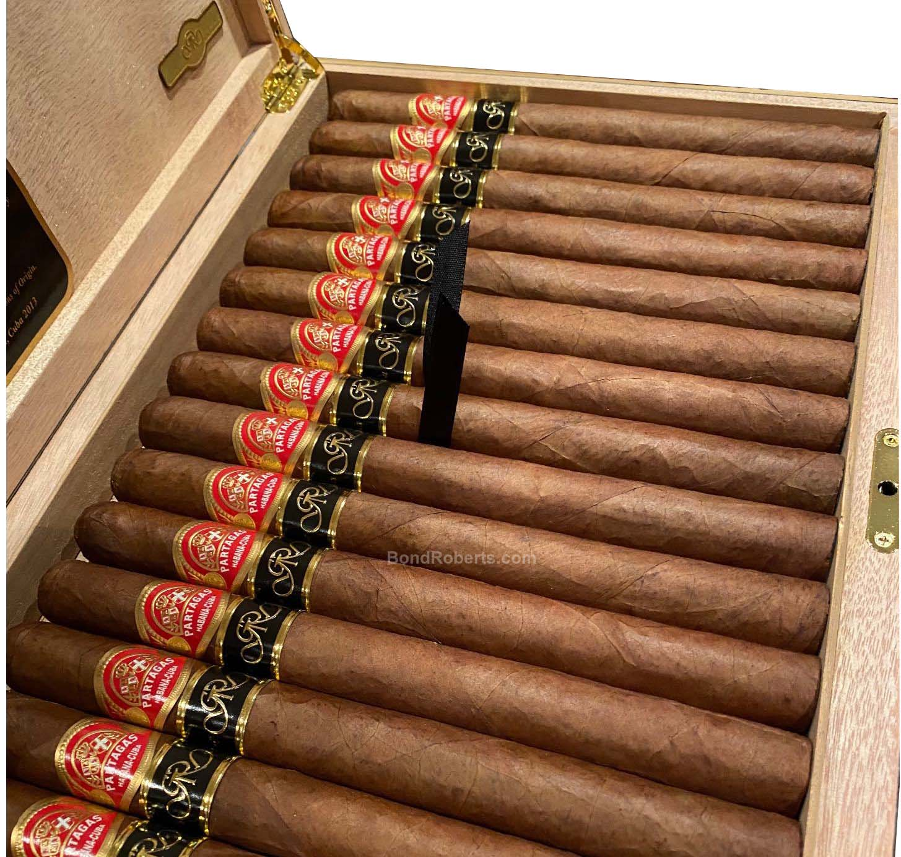
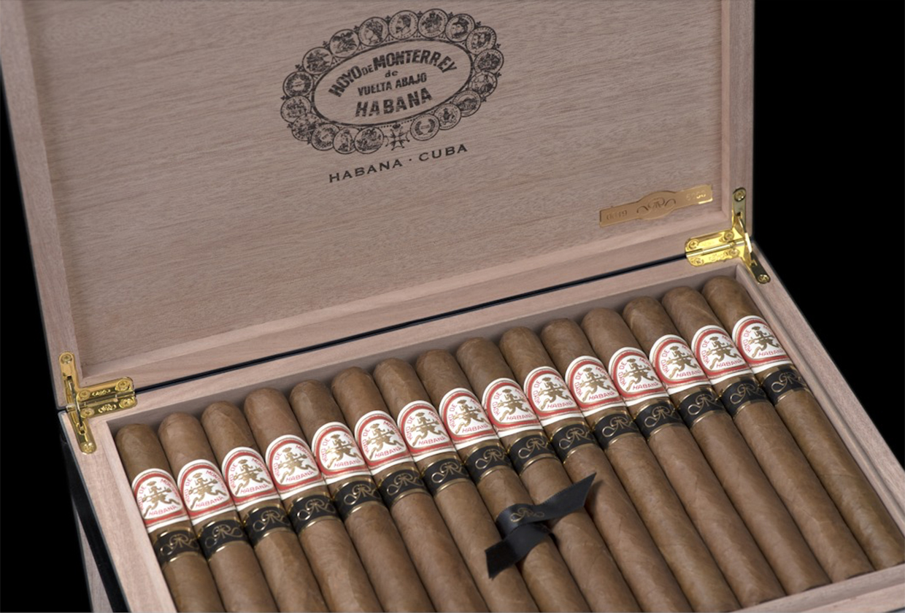
And the fourth survivor is Punch's Double Coronas (194mm × RG49). What disappeared in the 2017 deletion list was only the 50-cigar cabinet packaging; the dress box of 25 continued. An enthusiast record (2020) writes: “the four that remain — the Lusitanias, the Gigantes, the Hoyo DC, the Punch DC — thankfully are still with us.” At the Japanese patrol shops, however, it is hardly ever seen, and in practice it is difficult to obtain.
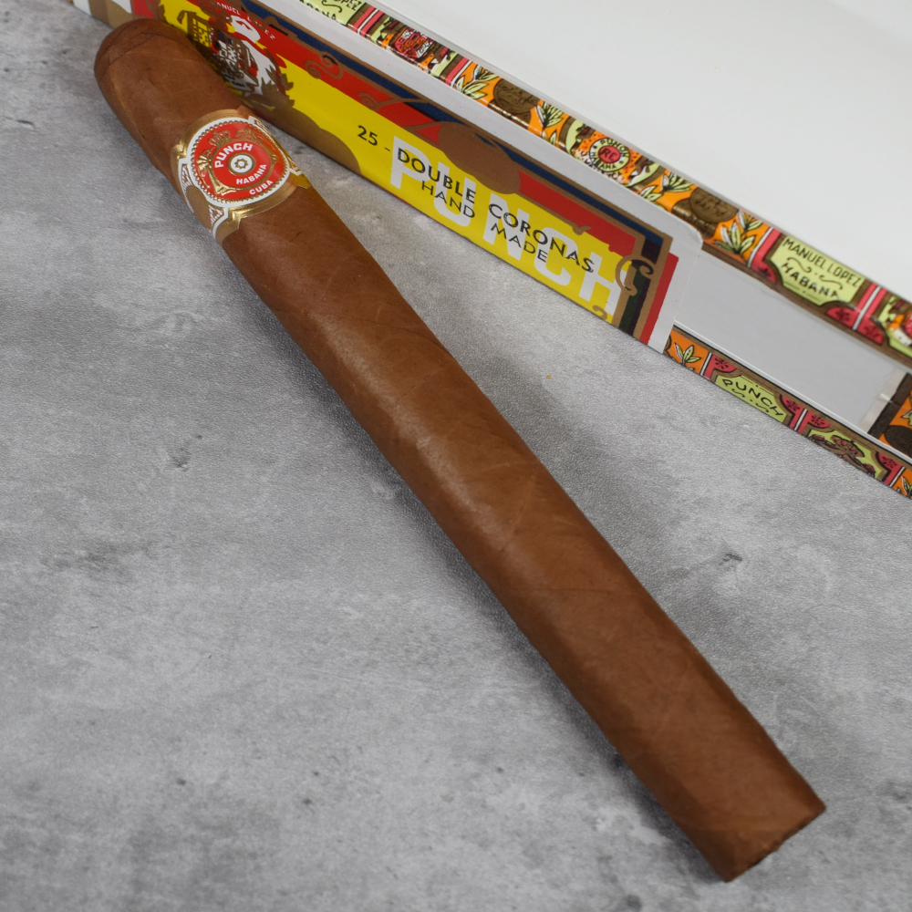
Why did only these four remain? The answer is simple: because they were the “faces” of their signboard brands. A face whose cutting would thin out the brand's story was protected from the blade of rationalisation to the very end. And the longing for giants itself keeps being revived, again and again, inside the limited editions (EL / Gran Reserva). What disappeared was the “everyday giant,” not the giant itself — that is the conclusion up to Chapter 8.
◆ Chapter 9 — A Person — Cueto, the Man of 90 Metres
Finally, we check the answer on the person. The Editor's other memory — “the Guinness man, or something, who used to roll incredibly long house rolls.” His identity is, almost beyond doubt, José Castelar Cairo, known as Cueto.
Cueto learned to roll at the age of five, and his career exceeds 60 years (80 years old in 2024, 62 years in the trade). He is a torcedor who walked through the prestigious factories of La Corona, Partagás, and Briones Montoto (the factory of Romeo y Julieta / Cohiba), and today he continues his demonstration sales at “La Triada,” a shop at the entrance to the Morro-Cabaña Park in Havana. In 2012 he received the “Premio Habano (Habanos Award),” and the same year he was honoured by enthusiasts from around the world at the Casa del Habano Partagás's “Friends of Partagás Gathering.” That he became linked with “Partagás” in memory is naturally explained by the density of his exposure in those circles. We keep this strictly separate from the answer as a cigar (Chapter 5's Fabulosos).
All of his Guinness records are a genealogy of self-renewal. A first record of 11.04m in 2001. Then 14.86m in 2003, 20.41m in 2005, and 45.38m in 2008. And on May 3, 2011, at La Triada, he achieved 81.80m (4cm in diameter), and the shop's name and the date remain in Guinness's official record text. In August 2016, dedicating his work to Castro's 90th birthday, he rolled 90m (about 80kg of leaf, about 100 collaborators, eight days), but this was an achievement at the level of press reports, and as a Guinness-certified record, 81.80m is what remains. A figure of “79.9m” circulates in places, but it agrees with neither the official Guinness value nor the reporting of the time, and we judge it an error.
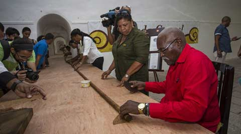
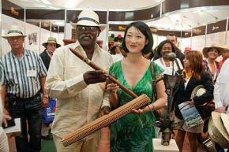
In his ordinary work, Cueto does not roll only record-class monsters. The custom rolls in which he excels, sold at La Triada, are the Salomón, the Presidentes, and the Manolín — all of them descendants of the giants' formats that we have followed in this feature. At the 2024 international gathering “El Legado de Cueto,” a double figurado about 2.2m long was put up for auction. Cuba's longest record has continued to be renewed not on a state list, but as one torcedor's “record of skill.” Set beside America's largest in Chapter 7 (a product on which a sale was concluded), the contrast is vivid.
Cueto says, “As long as I live, the longest will be in Cuba,” and his next goal is reported to be 100m (we introduce this with its grade lowered, as hearsay based on AZERTAC reporting). Whether the words of a torcedor past 80 are a joke or in earnest, no one knows. They are, though, the words of a man who has rewritten his own record from 11m to 90m. His track record is too heavy to laugh off.
Side Stories —
Three Tales to Enjoy, Grade Lowered
the Lonsdale (Hearsay)
Frank Sinatra is said to have been a great fan of Saint Luis Rey's Lonsdale (an anecdote that Quill & Pad introduces with its grade lowered, as “so it is claimed”). We leave it here at the grade of rumour, as a distant source of Chapter 3's cult popularity.
d'Yquem (Anecdote)
Davidoff's Cuban-era cigar “Château d'Yquem” was forced to end production in 1982 because the winery sought protection of the name, Cgars's material relates. It is billed as “the only cigar killed by an organisation outside the cigar industry,” but it is a story whose primary corroboration is weak. Enjoy it with its grade lowered by exactly as much as its entertainment value.
It Was Discontinued or Not” Problem
Around Chapter 3's Saint Luis Rey Double Coronas, confusion remains: even after its listing on the 2013 deletion list, there are “traces that a batch also came out in 2010.” Among enthusiasts, it has apparently become a joke that “in Cuba, things that were supposed to have disappeared suddenly come back.” We wrote its listing on the deletion list in the main text as fact, but the reality of how that is applied cannot be fully seen from outside Havana. That, too, is the reality of the world of the thinly recorded giants.
◆ Chapter 10 — Buying in Japan — The Price of Giants
Last, the subject of price. First, two points of contact with Japan. The Diplomáticos Bushido (Chapter 6's table, 184×50) is a regional edition for Asia Pacifico commemorating the 400th anniversary of Hasekura Tsunenaga's arrival in Cuba in 1614. The Ramón Allones Estupendos (178×47) was Asia Pacifico's first regional edition, and its territory includes Japan. Among the giants' places of migration, there was a cigar engraved with Japan's name, and a cigar of a territory that includes Japan.
The “now” of the three current cigars is just as the introduction felt. The only box that can be bought right now is, within the range covered by our patrol, this one box of the Lusitanias (the only shop selling it online to ordinary enthusiasts is CigarTerminal; unchanged in the patrol on the morning of November 11). Prices are as at the patrol on the morning of November 10, 2026, converted at $1 = ¥158, £1 = ¥212, CHF 1 = approx. ¥193, €1 = approx. ¥178.
Partagás Lusitanias (194×49)
Ramón Allones Gigantes (194×49)
Hoyo de Monterrey Double Coronas (194×49)
The discontinued group's main battlefield has moved to the auctions. The Bolívar Coronas Gigantes stands at Bond Roberts with a 1999 box of 25 at $1,355, a 2016 box of 25 at $1,305, and a 2008 box of 50 at $2,505 (the most recent examples as of the end of 2022). For the Saint Luis Rey Double Coronas, the specialists' yardstick is “a bargain if under $100 per cigar.” A 1998 box of 10 of the La Gloria Cubana Taínos carried an estimate of £600–700. The Lusitanias Gran Reserva remains out of stock at EGM's listed CHF 6,999.99 (approx. ¥1.35 million), and for the Cuaba Diadema only a listing at the same shop's CHF 350–367.50 (approx. ¥67,600–70,900) remains. The Gran Reserva class is now entirely a collectors' market. Among the regional giants, the box of 50 of the Kon Tiki 1973 is currently listed at TopCubans ★★★☆☆ at $7,267–7,419 (approx. ¥1,148,000–1,172,000) (as of November 10, 2026).
The non-Cuban “giants you can buy” are listed only from shops whose shipping to Japan has been confirmed.
JFR Lunatic Maduro 880 Belicoso (8×80)
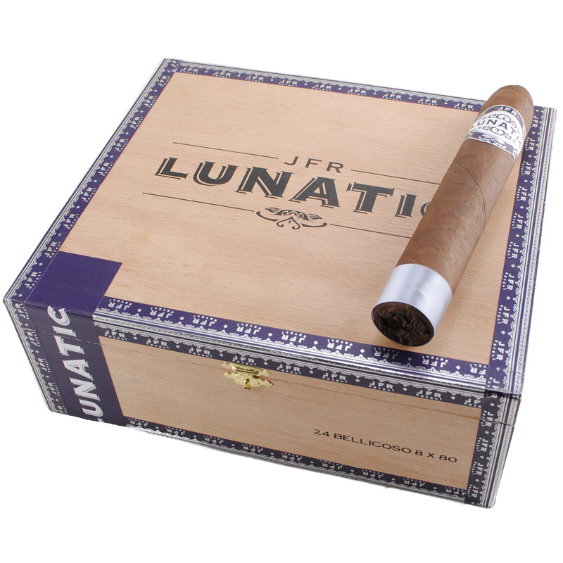
La Flor Dominicana Double Ligero “Digger” (216×60)
Plasencia Alma Fuerte Generación V Salomón (178×58)
The Continental Giants You Cannot Buy (Reference)
◆ Conclusion — Where Did the Giants Go?
We close the genealogy we have followed, line by line. Cuba's giants passed through the first wave of revolution and nationalisation, and disappeared from the regular catalogues in the waves of the 2010, 2013 and 2017 deletion lists. They did not, however, become extinct. They are revived as the “special forms” of limited editions, they migrated to the regional editions, and they live on in the auction market as “giants to admire.” Across the Atlantic, the exile generation carried “length” as a family treasure, and market competition swelled “girth” to RG134. In Manila, a double corona 21mm longer than the Cuban standard quietly remains in the current register. And in a corner of Havana, a torcedor past 80 still guards the world's longest record with his own hands.
Finally, the disclaimer of the opening, once more. This genealogy is not exhaustive. Given that a giant such as the Fabulosos existed — a cigar of which even the specialist databases hold no photograph — house rolls that left no record, and long cigars of brands that became extinct unnamed, may still be sleeping somewhere. If, in the depths of your humidor, a nameless giant is sleeping — that is the continuation of this genealogy. Our editorial office awaits that report.